Six VMs from one commit: GitOps that reaches the hypervisor on VCF 9.1
Argo CD as a Supervisor Service, a VKS cluster and an app built from one Git repository, end to end in a Holodeck lab
The moment
A 40-line YAML file is pushed to main and Sync is pressed. Fifty-nine seconds later the Supervisor has created the first virtual machine object.
Minutes later that VM powers on in vCenter, a brand-new Kubernetes API is answering on 10.200.200.7:6443. The cluster finishes as six VMs, three control-plane nodes and three workers, with podinfo running inside. (minutes for nested Holodeck environment)
Nobody opened a wizard, nobody ran Terraform, nobody had cluster credentials on a build server.
Then a one-line commit takes podinfo from one pod to three in 16 seconds, and when it is scaled back to one by hand, Argo CD puts it back the way Git says in four seconds.
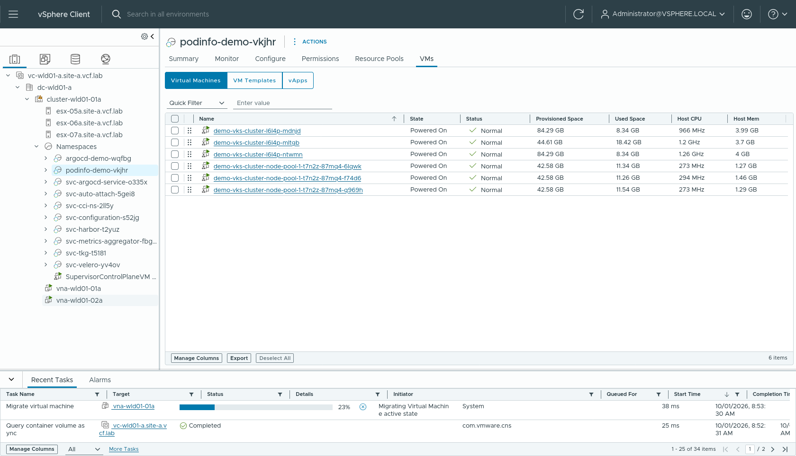
vSphere Client, namespace podinfo-demo-vkjhr: three demo-vks-cluster-l6l4p-* control-plane VMs and three node-pool-1 workers, all Powered On. Every one of them exists because of a single commit.
That is the thing a plain Kubernetes cluster cannot do and VMware Cloud Foundation can: the same GitOps loop that deploys containers also creates and resizes the machines they run on, because the vSphere Supervisor exposes VMs, VM-based Kubernetes clusters and vSphere Pods as Kubernetes objects.
This post builds that from a bare Supervisor, in a nested Holodeck lab, with every command and every "gotcha".
Part 2 covers who is allowed to change what once nobody deploys by hand, and what to do the day it does not work.
If you have never touched Kubernetes, three sentences are enough to follow along.
Git is the recipe book: it holds the exact description of every cluster and every app you want.
Argo CD is a cook who reads the book every few minutes, makes whatever it says, and if someone tampers with a plate, quietly makes it again the way the book says.
The vSphere Supervisor is a kitchen that can build both the ovens (virtual machines) and the dishes (containers) from the same recipe, which is why one book can describe a whole cluster and not just what runs in it.
What you did not have to do
A practitioner who has built this on bare Kubernetes will recognize the list. Everything in the right-hand column is the platform's job on VCF.
| On a plain Kubernetes stack | On VCF 9.1 |
|---|---|
| Bootstrap Cluster API, pick a provider, template the machines, maintain node images | Commit a 40-line Cluster object; the Supervisor builds Photon nodes from its content library |
| Install and patch Argo CD yourself, per cluster | Enable the Argo CD Operator once per Supervisor; one ArgoCD object per team; upgrades are a version bump |
| Choose and operate a CNI, a load balancer and an ingress | Every namespace gets its own NSX VPC, SNAT and load balancer; Antrea comes with the cluster |
| Build guardrails from scratch: quotas, storage classes, who may create what | VM classes, storage policies, namespace quotas and vSphere SSO roles already exist and apply to Git-created objects |
| Keep VMs and containers in two tool chains | One repository can hold the VKS cluster, the apps in it and VM Service virtual machines beside them |
| Find out at 2 a.m. that a node image, a CNI version and a Kubernetes version disagree | Kubernetes releases are validated bundles; the Argo CD service lags a new VKS minor by two to four months and says so |
Argo CD in one page
Argo CD is a service that runs inside Kubernetes and does one job: it keeps a running environment identical to a set of YAML files stored in Git.
You describe what you want, commit it, and Argo CD pulls the repository, compares it with what is actually running, applies whatever is missing, and then keeps checking. If someone changes the live system by hand, Argo CD notices the drift and, if you let it, puts it back.
Git is the source of truth and nobody deploys by hand; that working style is GitOps.
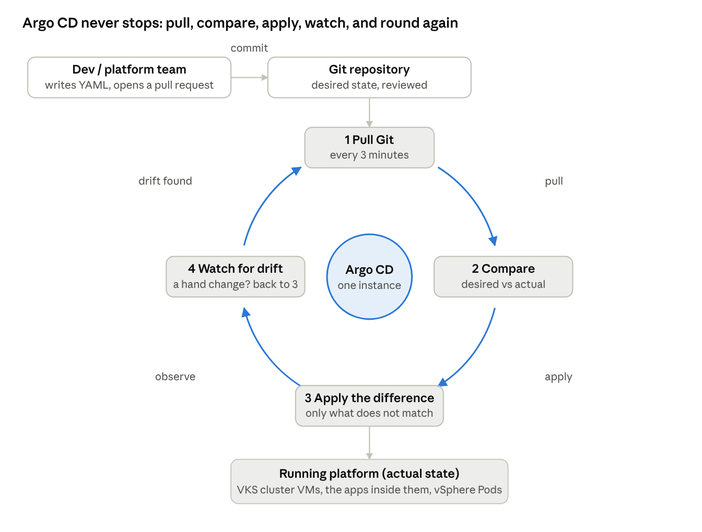
Four objects carry the whole model:
- An Application points one folder of a Git repository at one target (a cluster endpoint plus a namespace) and holds the sync policy: manual, automated, self-heal, prune.
- A Project (
AppProject) is the boundary an Application must fit inside: which repositories it may read, which targets it may write to, which kinds of objects it may create, and when it may sync. - A cluster secret is a registered target: the API endpoint plus the credential Argo CD uses there.
- The RBAC policy says which humans may do what to which Applications and Projects.
What the two audiences get:
| Platform admin | Developers and platform engineers | |
|---|---|---|
| Before | Every new cluster, node pool or upgrade is a ticket and a kubectl session; nobody can say who changed what |
Deploy with pipelines that push into the cluster and keep cluster credentials on a build server |
| After | Sets boundaries once (namespaces, quotas, Projects, targets) and hands teams a repository. Every change is a commit with an author, a reviewer and a diff; a cluster upgrade is a one-line change; rollback is git revert |
Open a pull request. Argo CD pulls the change in, so no cluster credential leaves the platform. The UI shows what is deployed where, whether it matches Git, and why it is unhealthy |
On VCF the reach is wider than on a plain Kubernetes cluster, because the Supervisor exposes VMs, vSphere Pods and VKS clusters as Kubernetes objects.
The same repository can therefore create the VKS cluster, deploy the apps into it, and provision VM Service virtual machines beside them.
Argo CD as a VCF Automation service (9.1.1 Tech Preview) (not covered)
Since VCF 9.1.1 the same Argo CD is also delivered through VCF Automation: a provider admin installs the GitOps service once per region from Service Management, an organization admin deploys instances and attaches targets from the org portal, and users log in with their VCF Automation credentials.
The loop does not change; the 9.1.1 bill of materials lists both forms at the same version, 1.2.0, built by the same Operator.
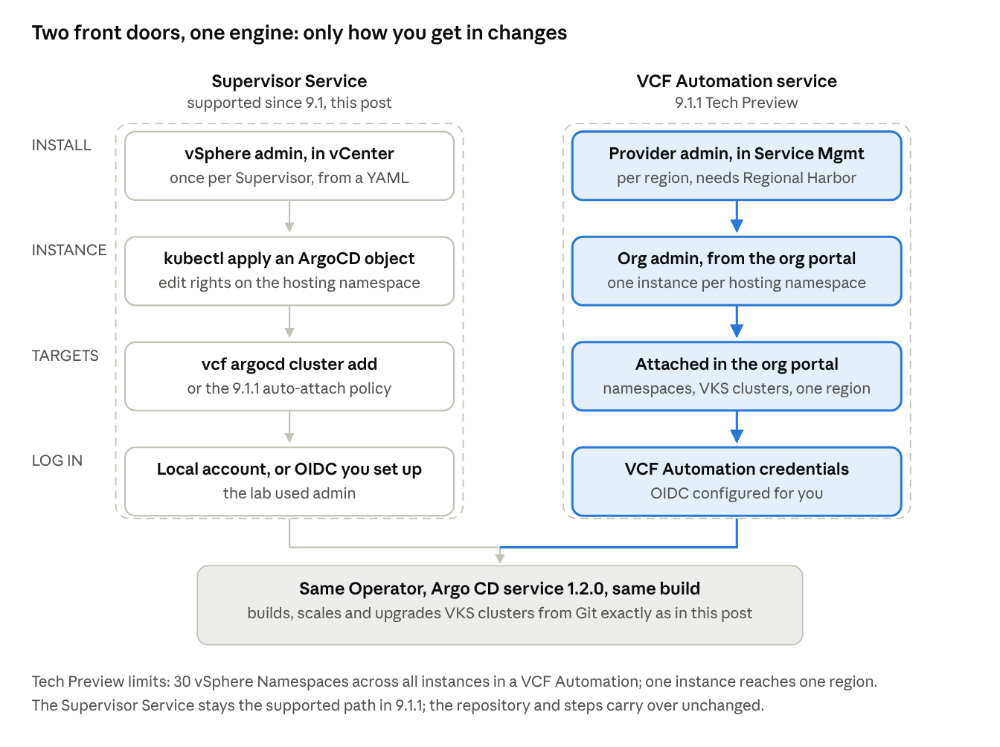
| Supervisor Service (this post) | VCF Automation service (Tech Preview) | |
|---|---|---|
| Installed by | vSphere admin, once per Supervisor, from vCenter | Provider admin, once per region, from Service Management |
| Argo CD instance created by | An ArgoCD object applied to a namespace |
Org admin, from the VCF Automation org portal |
| Namespaces and VKS clusters registered by | vcf argocd cluster add, or the 9.1.1 auto-attach policy |
Attached in the org portal |
| Login | Argo CD local accounts, or OIDC configured by hand | VCF Automation credentials |
| Building, scaling, upgrading VKS clusters from Git | Yes, Cluster objects in a namespace target | The same: same Operator, same Cluster objects, same repository |
| Scale limit | None stated | 30 vSphere Namespaces across all instances in a VCF Automation |
| Prerequisites | A Supervisor | Regional Harbor in the region |
| Status in 9.1.1 | Supported since VCF 9.1 | Tech Preview |
Its strength is onboarding and identity, not the cluster build. Tenants get Argo CD as a self-service item instead of a ticket, attach their namespaces and VKS clusters in the portal without kubeconfigs or a CLI, and log in with their VCF Automation accounts, which is also how SAML or LDAP users reach Argo CD (the Operator on its own supports only local accounts and OIDC).
Building, scaling and upgrading VKS clusters from Git works the same on both, because both run the same Operator against the same Supervisor.
In 9.1.1 the Supervisor Service remains the supported choice. Because both run the same Operator, the repository and steps in this post should carry over once the VCF Automation option leaves Tech Preview.
The lab, and where every piece of configuration lives
The whole environment is a nested VCF 9.1.0 Holodeck: management domain, a workload domain with NSX 9.1, a Supervisor with NSX VPC networking, and a VCF Automation instance.
Around it sit the two routers Holodeck gives you: the holorouter (a Photon OS VM that is the default gateway for every Holodeck VLAN and also hosts the lab DNS as a host-network pod) and a VyOS on the outer lab network that routes between Holodeck and the rest of the lab. Every configuration change in this post was made on one of those two VMs, in NSX, or in the Supervisor. Nothing was changed on physical equipment.
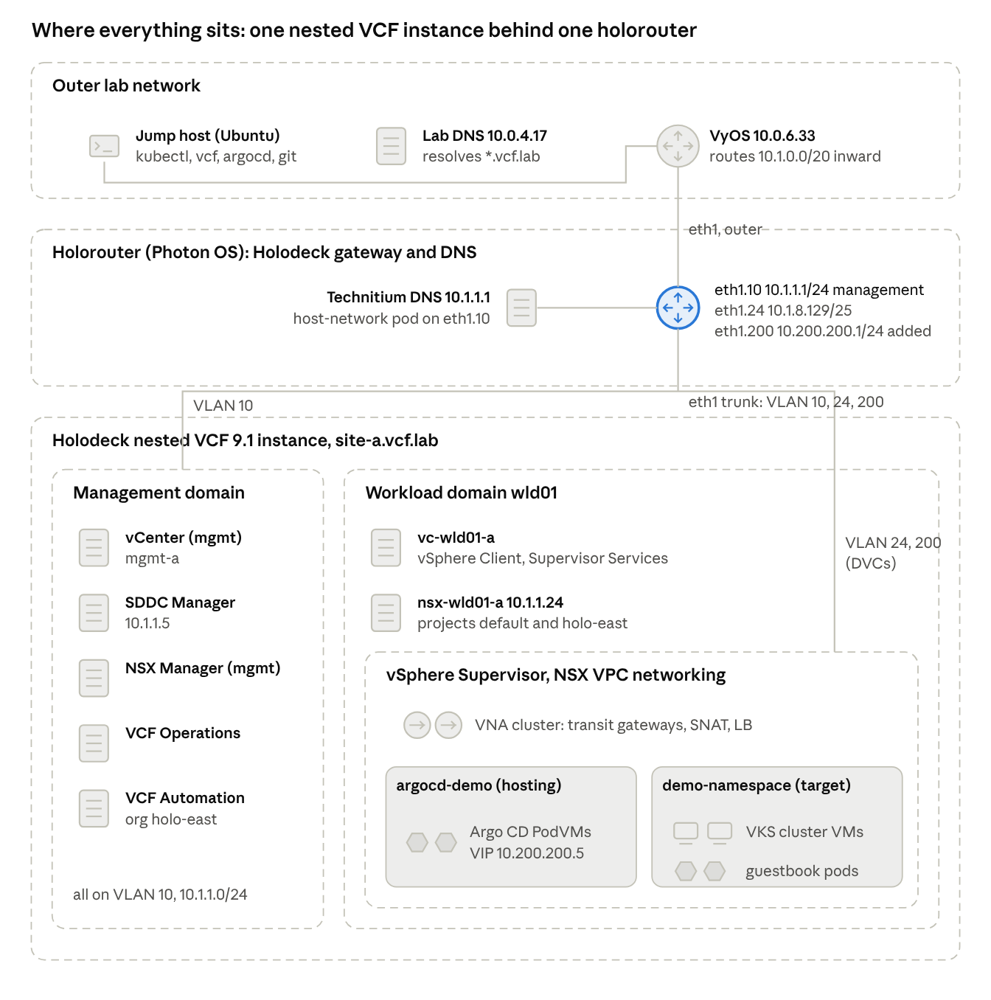
| Component | Where it sits | Address |
|---|---|---|
| Jump host (Ubuntu) | Outer lab network | route 10.1.0.0/20 via 10.0.6.33, DNS 10.0.4.17 |
| VyOS | Outer lab network, edge of Holodeck | 10.0.6.33; static route 10.200.200.0/24 to the holorouter |
| Holorouter | Between the outer network and every Holodeck VLAN | eth1.10 10.1.1.1/24, eth1.24 10.1.8.129/25, eth1.200 10.200.200.1/24 |
| Technitium DNS | Host-network pod on the holorouter | 10.1.1.1, answers UDP only from locally attached VLANs |
| vCenter, SDDC Manager, NSX Manager, VCF Operations, VCF Automation | Management domain mgmt-a |
VLAN 10, 10.1.1.0/24; SDDC Manager 10.1.1.5 |
vCenter vc-wld01-a |
Workload domain wld01 |
where Supervisor Services are enabled |
NSX Manager nsx-wld01-a |
Workload domain wld01 |
10.1.1.24; NSX projects default and holo-east |
| VNA cluster | Workload domain, serves both projects | SNAT 10.1.8.130 (default project), 10.200.200.3 (holo-east) |
Hosting namespace argocd-demo |
Supervisor, VPC vpc-argocd-demo, project holo-east |
Argo CD VIP 10.200.200.5 |
Target namespace podinfo-demo-vkjhr |
Supervisor, its own VPC, project holo-east |
VKS cluster VMs (control plane 10.200.200.7:6443, nodes 10.17.17.x), podinfo LoadBalancer 10.200.200.8, and the podinfo vSphere Pods |
That is all the networking you need to follow the steps. How the tenant VPC reaches the outside through a Distributed VLAN Connection (DVC) on VLAN 200, with its own drawing and the full NSX object table, is in Part 2 under Under the hood, next to the gotcha's it explains.
Before you start
| Item | Used in this lab |
|---|---|
| VCF | 9.1.0 Holodeck, workload-domain NSX 9.1, Supervisor with NSX VPC networking |
| Argo CD | Argo CD Supervisor Service 1.2.0, which bundles upstream Argo CD 3.4.4 |
| Tenant | VCF Automation organization holo-east with two vSphere Namespaces, each on its own VPC in the holo-east NSX project |
| External connectivity | A Distributed VLAN Connection on VLAN 200, gateway 10.200.200.1/24, external block 10.200.200.0/24 |
| Jump host | Ubuntu on the outer network with kubectl and the VCF CLI, whose argocd plugin provides the Argo CD commands; its setup is Appendix A in Part 2 |
| App | podinfo 6.15.0 (ghcr.io/stefanprodan/podinfo), a small web app that shows which pod served the page |
| CLI | VCF CLI 9.0.2 with the argocd plugin v1.2.0. There is no standalone argocd binary, so every Argo CD command in this post is typed vcf argocd … |
| Node images | Subscribed content library VKS-1 (138 items, download on demand), set as the Supervisor's Kubernetes Service content library |
| Cluster | Kubernetes v1.35.5+vmware.1-vkr.1, Photon OS, cluster class builtin-generic-v3.6.0; control plane best-effort-small (2 vCPU, 4 GiB), workers best-effort-xsmall (2 vCPU, 2 GiB) |
| Target namespace limits | podinfo-demo-vkjhr raised to 200000Mi storage and 20000Mi memory (24000Mi for the seventh VM in step 6); the small class default of 100000Mi and 10000Mi cannot hold six node VMs |
| Repository | github.com/sorinplaton/vcf-gitops, public; every file in this post is there at tag blog-part1 |
This post uses only Argo CD on VCF; a side-by-side comparison closes the Argo CD in one page section.
The VCF Automation organization exists here because it is how the tenant got its NSX project, VPCs and namespaces; Argo CD itself never goes through it.
The repository
Everything this post applies is in Git, and the links point at the tag blog-part1, so they keep showing what the lab ran even after main moves on. Code blocks below show the lines that matter; the full files are one click away.
| Folder | What it holds | Watched by Argo CD |
|---|---|---|
clusters/ |
The VKS cluster definition | Yes, by demo-vks-cluster |
apps/ |
podinfo for the VKS cluster | Yes, by podinfo-vks |
argocd-apps/ |
The three Applications as YAML, and a root Application | No: applied with kubectl (step 6) |
platform/argocd/ |
The live ArgoCD object and its config maps, exported | No |
examples/ |
Part 2's RBAC policy, Projects and deletion guard, not applied in the lab | No |
lab/ |
The Holodeck-only router changes | No |
tools/capture/ |
The script that took the screenshots | No |
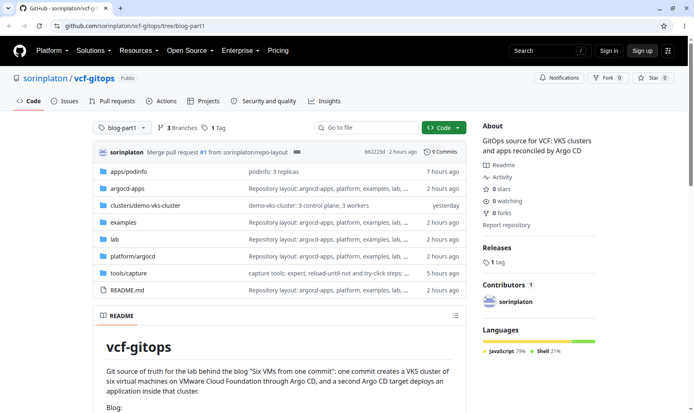
S20. The repository at tag blog-part1.
Preflight: eight checks before step 1
Each row is a one-line test you can run from the jump host, with the place in this post that explains the fix. Rows marked Holodeck are problems of a nested lab; on production VCF the network team's router and DNS normally pass them already, but run the test anyway.
| Check | Test | Passes when | Fix in |
|---|---|---|---|
| Argo CD Supervisor Service installed | kubectl api-resources \| grep argocd |
argocds is listed |
Step 1 |
| DVC gateway answers (Holodeck) | ping 10.200.200.1 |
replies | Step 2 |
| DNS answers over UDP from the VPC's VLAN (Holodeck) | Now, from the jump host: dig @10.1.1.1 projects.packages.broadcom.com +tcp. Later, from VLAN 200: a UDP lookup from a VKS node or a vSphere Pod image pull |
TCP answers now; the VLAN 200 lookup answers later (a UDP timeout from the jump host is expected on Holodeck) | Step 2 |
| Org VPC has a load balancer | kubectl get vpcnetworkconfiguration <ns-config> -o jsonpath='{.status.vpcs[0].nsxLoadBalancerPath}' |
a /vpc-lbs/ path |
Step 2 |
| Kubernetes releases exist | kubectl get kr |
your release READY and COMPATIBLE True | Step 4 |
| A cluster class supports that release | kubectl apply --dry-run=server -f cluster.yaml |
created (server dry run) |
Step 4 |
| Target namespace can hold six VMs | kubectl -n <ns> get storagepolicyquota |
limit above 120 GiB plus headroom, and memory above 18 GiB | Step 4 |
| VKS nodes can resolve registries (Holodeck) | from a node, a UDP DNS query to its resolver | an answer | Step 5 |
Every screenshot in this post comes from the real run; the checklist at the end lists the few optional extras.
Step 1. Enable the Argo CD Supervisor Service
The Argo CD Operator is a Supervisor Service, installed once per Supervisor from the vSphere Client. It is a Broadcom-built Kubernetes Operator whose only job is the lifecycle of Argo CD instances: it teaches the Supervisor a new object type, ArgoCD, and whenever one appears in a namespace it builds, upgrades and repairs the instance behind it.
In the 9.1.1 bill of materials the service is version 1.2.0 and it bundles upstream Argo CD 3.4.4 (the version the API reported once the lab instance was healthy).
Where the YAML comes from. The Argo CD Supervisor Service download on the Broadcom support portal is a small bundle: the service definition supervisor-service-argocd-1.2.0-<build>.yml (with -legacy- and -depot- variants for air-gapped installs), the customised argocd CLI, and the Operator release notes.
The service YAML is what you hand to vCenter; inside it, spec.template.spec.fetch.imgpkgBundle[].image points at the OCI bundle the Operator is actually installed from, on Broadcom's registry:
projects.packages.broadcom.com/vsphere/supervisor/argocd-service/1.2.0/argocd-service:v1.2.0_vmware.1
That bundle is also readable from the jump host, which is the quickest way to see exactly what the Operator will deploy and which spec.version values it knows:
# copy the exact image reference from the service YAML you downloaded
grep -A2 imgpkgBundle supervisor-service-argocd-1.2.0-*.yml
imgpkg pull -b projects.packages.broadcom.com/vsphere/supervisor/argocd-service/1.2.0/argocd-service:v1.2.0_vmware.1 \
-o ~/argocd-service-1.2.0
ls ~/argocd-service-1.2.0/ # package YAML, CRD, sample ArgoCD manifests
In an air-gapped lab the same reference is what gets copied into a local software depot before the -depot- YAML is registered; the air-gapped guide in Sources has the procedure, and VCF Download Tool 9.1.1 fetches the whole bundle with artifacts download --component SUPERVISOR_SERVICE_ARGOCD.
Then in the vSphere Client go to Supervisor Management > Services, click Add, upload the service YAML, and on the new Argo CD card choose Install on Supervisors and pick the Supervisor.
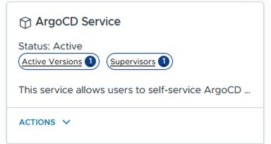
The ArgoCD Service card under Supervisor Management > Services once it is installed: one active version, one Supervisor. This is the only install step in the whole post.
Check from the jump host that the Supervisor now knows the new noun:
vcf context use sv-a:argocd-demo-wqfbg
kubectl api-resources | grep argocd
argocds in the argocd-service.vsphere.vmware.com group is the Operator having registered its type. One caution for later: a Supervisor upgrade is blocked if a Supervisor Service such as Argo CD or Harbor is at a version the target Supervisor does not support, so keep the service current from the same Services page.
Step 2. Namespaces, the VPC load balancer, and the network nobody documents
Argo CD needs a hosting namespace to run in and at least one target namespace to deploy into.
In this lab both belong to the VCF Automation organization holo-east, which created them on their own VPCs; in a vCenter-only lab you would create them under Supervisor Management > Namespaces with a VM class and a storage policy attached to the target, since that is where the VKS cluster's VMs will land.
Either way, the account that will apply the ArgoCD object needs edit or owner on the hosting namespace.
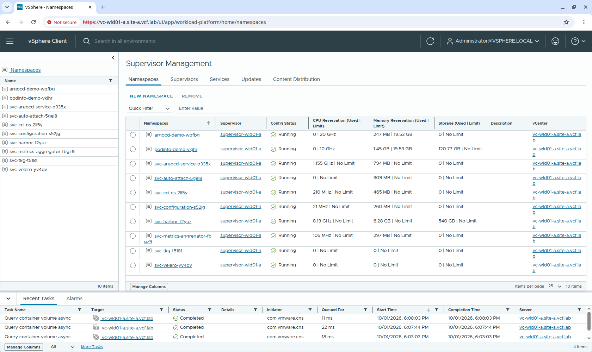
Supervisor Management > Namespaces: the hosting namespace argocd-demo-wqfbg and the target podinfo-demo-vkjhr, each with its CPU, memory and storage use.
Three things must be true before the first pod starts, and none of them are checked for you.
Holodeck only, from here to the load balancer. On production VCF the DVC gateway is your physical router and DNS is your corporate DNS: run the two tests below to confirm, and skip the holorouter fix.
In a Holodeck lab nobody owns VLAN 200 until you make someone own it.
The DVC (Distributed VLAN Connection) gateway must exist. VCF Automation writes the VLAN, the gateway address and the external block into NSX and stops.
Somebody has to own 10.200.200.1 on VLAN 200, or every SNATed packet leaves the VNA towards a MAC that does not exist. Verify from the jump host, which sits on the outer lab network, before going further:
ping 10.200.200.1 # the DVC gateway: must answer
ip route get 10.200.200.3 # the SNAT address: must have a route
DNS must answer over UDP from the new VLAN. The ESXi image fetcher resolves the registry with a UDP query first.
The client is not the jump host. The registry lookup is a UDP query that leaves from VLAN 200: the ESXi image fetcher sends it for vSphere Pods, the node VMs send it for a VKS cluster.
A DNS server that answers UDP only from its own VLANs, as the Holodeck one does, times out every one of those queries while dig +tcp from the jump host succeeds and hides the problem. So test with UDP, from VLAN 200:
| Run from | When | What it proves |
|---|---|---|
| Jump host, on the outer lab network | Before anything exists | Only that the DNS server is up. On Holodeck, UDP from here times out even when VLAN 200 is fixed, because the jump host is not on one of the holorouter's own VLANs |
| A VKS node, on VLAN 200 | Once the cluster exists (step 5) | The real client path for VKS clusters. A timeout here is what the step 5 DNS fix solves |
| The pods themselves | After the first vSphere Pod deploy | For vSphere Pods the image pull is the test: pods Running and no ErrImagePull |
# 1. Jump host (outer lab network): proves the server is up, nothing more
dig @10.1.1.1 projects.packages.broadcom.com +tcp # must answer
dig @10.1.1.1 projects.packages.broadcom.com # UDP: times out on Holodeck from here
# 2. A VKS node (VLAN 200), once the cluster exists: the real client path
kubectl --context demo-vks-cluster -n kube-system exec ds/antrea-agent -c antrea-agent -- \
getent hosts ghcr.io # must print an address
# 3. vSphere Pods: the image pull is the test
kubectl -n podinfo-demo-vkjhr get pods # Running, no ErrImagePull
In this lab both were fixed at once by making VLAN 200 a sub-interface of the holorouter, so the VPC became a local client of the DNS:
# holorouter, persisted as /usr/local/bin/holo-vlan200.sh in a oneshot systemd unit
ip link add link eth1 name eth1.200 type vlan id 200
ip link set eth1.200 mtu 8000 up
ip addr add 10.200.200.1/24 dev eth1.200
arping -U -c 3 -I eth1.200 10.200.200.1 # tell the VNA the gateway MAC changed
# DNS redirect for the VKS nodes, which ask 10.1.1.1 directly (see below)
iptables -t nat -I PREROUTING -i eth1.200 -d 10.1.1.1/32 -p udp --dport 53 \
-j DNAT --to-destination 10.200.200.1:53
# VyOS: release the gateway, keep forwarding the block to the holorouter
configure
set protocols static route 10.200.200.0/24 next-hop 10.0.6.33
# next-hop the holorouter ip
commit; save
The sub-interface is enough for vSphere Pods. The iptables line is for the VKS nodes built in step 4: they use 10.1.1.1 as their resolver, and from VLAN 200 that address did not answer UDP while the holorouter's own VLAN 200 address did, so the redirect sends their queries to 10.200.200.1. It was found in step 5, when the first pod could not pull its image; both holorouter changes live in the same script so they survive a reboot.
The org VPC needs a load balancer, and it is off by default. With NSX load balancing, a LoadBalancer service gets its VIP from a load balancer on the namespace's VPC. The VPCs the Supervisor created for its own namespaces had one; the two VPCs VCF Automation created for holo-east did not (load_balancer_vpc_endpoint.enabled: false, nothing under vpc-lbs). Until one exists, every LoadBalancer service in the namespace sits at <pending>, and NCP logs NCP00270 … Lbs <ns> is not found beneath the generic "Generic error occurred during realizing network for Service" event.
The simplest fix is to avoid the problem: when you create the VPC in the VCF Automation tenant portal, switch Enable load balancing to Yes.
The form defaults to No, and its own warning says what that breaks.
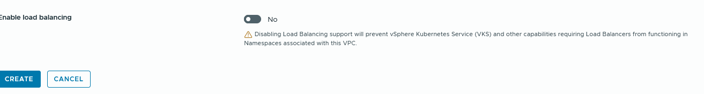
The VPC creation form in VCF Automation. Enable load balancing defaults to No; the warning underneath says it prevents VKS "and other capabilities requiring Load Balancers" from working in the VPC's namespaces. Switch it on before you click Create.
If the VPC already exists without one, add it from the NSX Manager UI:
- Log in to the workload-domain NSX Manager and switch the Project selector at the top from Default to
holo-east. - Go to VPCs > Virtual Private Clouds, expand the org VPC (here
vpc-argocd-demo-isedcbfor the hosting namespace andvpc-podinfo-demo-l2x8e4for the target), and open its Network Services section. - Click Add Load Balancer, size Small, and save. Repeat for the second org VPC.
- Wait for the NSX operator's next sync, then confirm the Supervisor has picked it up:
kubectl get vpcnetworkconfiguration <ns-config> \
-o jsonpath='{.status.vpcs[0].nsxLoadBalancerPath}'
# /orgs/default/projects/.../vpcs/vpc-argocd-demo-.../vpc-lbs/lb-...
Either way, the load balancer must exist before argocd-server can get a VIP.
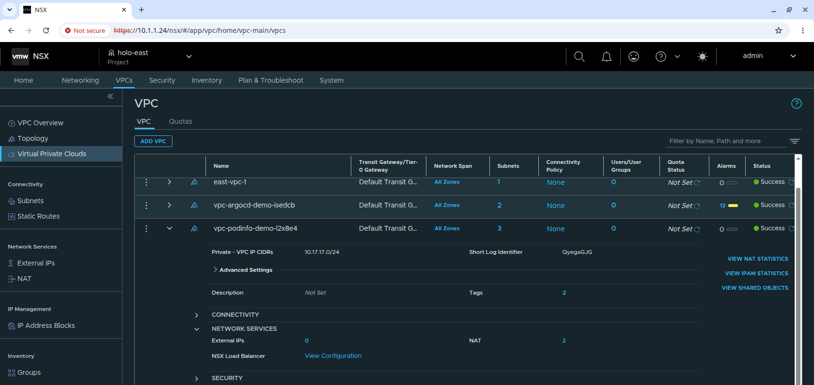
S3. NSX Manager, project holo-east: the target VPC vpc-podinfo-demo-l2x8e4 expanded, with its NSX Load Balancer under Network Services.
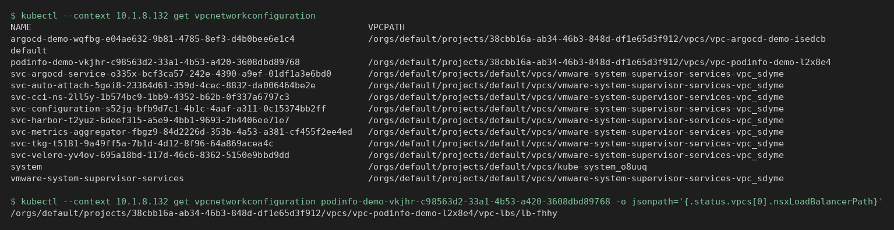
The Supervisor's side of the same load balancer: nsxLoadBalancerPath for podinfo-demo-vkjhr ends in /vpc-lbs/lb-fhhy. Empty output here means LoadBalancer services in that namespace will stay pending.
Step 3. Deploy the Argo CD instance
One small object is all the Operator needs. The minimal manifest below is the one from Broadcom's Example Argo CD Manifests page for the Supervisor Service, with the lab's names filled in; the full field list is in the Argo CD Custom Resource Reference, and once the Operator is installed the Supervisor can print it for you:
kubectl explain argocd.spec --recursive # every field the 1.2.0 Operator accepts
kubectl get crd argocds.argocd-service.vsphere.vmware.com -o yaml | less
Save it as argocd-instance.yaml. The only required field is spec.version; the replica counts (one of each by default) decide non-HA versus HA.
This is the object as it runs in the lab, exported to platform/argocd/argocd-instance.yaml:
apiVersion: argocd-service.vsphere.vmware.com/v1alpha1
kind: ArgoCD
metadata:
name: argocd-1
namespace: argocd-demo-wqfbg # the hosting namespace
spec:
version: 3.4.4+vmware.1-vks.1 # pick from the versions your Operator lists
enableLoadBalancer: true # argocd-server gets a VIP from the VPC load balancer
serverSideDiff: true
vcf context use sv-a:argocd-demo-wqfbg
kubectl apply -f argocd-instance.yaml
kubectl get argocd -n argocd-demo-wqfbg -w
What happens underneath is worth knowing before anything goes wrong. The Operator does not run Argo CD directly; it renders a kapp PackageInstall (Carvel), which reconciles every 10 minutes and owns the actual Kubernetes objects.
Don't want to wait 10 minutes? Trigger a reconcile now with the Carvel CLI, for example after deleting a failed Job:
kctrl package installed kick -i argocd-1-argocd-pkgi -n argocd-demo-wqfbgThis only forces one pass; it does not change the 10-minute period, which the Operator owns. It is also unrelated to Argo CD's own 3-minute Git polling in step 6.
Those objects are the upstream Argo CD deployments (argocd-server, argocd-repo-server, argocd-application-controller, argocd-redis), a one-shot Job argocd-redis-secret-init that writes the argocd-redis secret, and a LoadBalancer service for the UI.
On a Supervisor every pod is a small VM, so each of those runs as a PodVM in the hosting namespace: image pulls are done by the ESXi image fetcher through the VPC's SNAT, and a pod whose mounted secret is missing goes straight to the terminal phase ProviderFailed instead of waiting in ContainerCreating.
kubectl get packageinstall,pods,svc -n argocd-demo-wqfbg
Healthy looks like: the PackageInstall at Reconcile succeeded, four pods 1/1 Running, the argocd-redis-secret-init job Completed, and argocd-server with an EXTERNAL-IP from the VPC's external block. In this lab that VIP was 10.200.200.5.
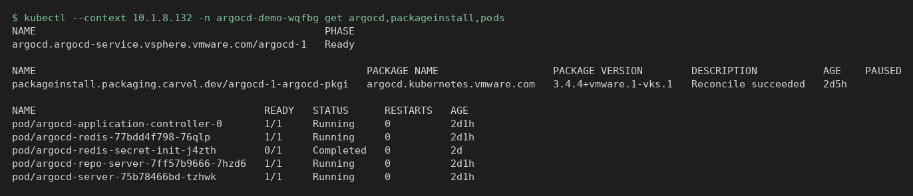
Healthy, as it looks in the terminal: argocd-1 Ready, the PackageInstall at Reconcile succeeded, four pods Running and argocd-redis-secret-init Completed.
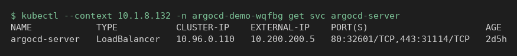
argocd-server with its VIP, 10.200.200.5, from the VPC load balancer.
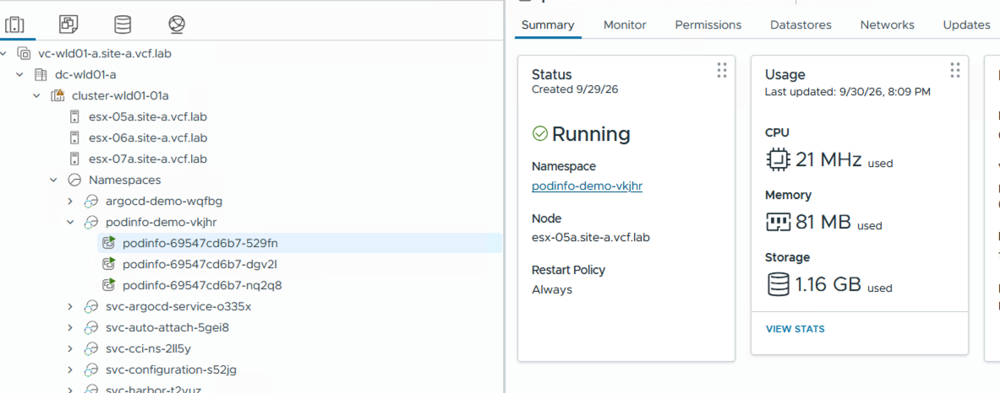
In the vCenter inventory: argocd-demo-wqfbg is the hosting namespace; svc-argocd-service-o335x is where the Operator itself runs; svc-auto-attach-5gei8 is the 9.1.1 VKS auto-attach service; and the three podinfo-* pods in podinfo-demo-vkjhr are vSphere Pods that Git deployed straight into a namespace (more on these at the end of the post).
Log in. The Operator supports two authentication modes: Argo CD local accounts, or OIDC single sign-on against your own identity provider. The lab uses the local admin account; its initial password is in the secret the instance creates in the hosting namespace (check kubectl get secrets -n <hosting-ns> for the exact name on your Operator version, upstream calls it argocd-initial-admin-secret).
kubectl -n argocd-demo-wqfbg get secret argocd-initial-admin-secret \
-o jsonpath='{.data.password}' | base64 -d; echo
vcf argocd login 10.200.200.5 --username admin --insecure
# 'admin:login' logged in successfully
vcf argocd version # the plugin, v1.2.0; the UI's top-left shows the server, v3.4.4
One detail from this build: the instance is deployed with cluster.inClusterEnabled=false, so unlike upstream Argo CD it does not register itself as a target.
The hosting namespace is where Argo CD lives, not somewhere it deploys to, until you register a namespace in the next step.
Step 4. Register the namespace and create a VKS cluster from Git
Argo CD on VCF has two kinds of target, and keeping them apart is most of the design.
- A vSphere Namespace (target 1) gives Git the Supervisor's own objects: a
Clusterthat the Supervisor turns into node VMs, VM Service virtual machines, vSphere Pods. Argo CD's rights stop at the namespaces you register, so this target builds infrastructure and nothing else. - A VKS cluster (target 2) gives Git what runs inside that cluster: Deployments, Services, Helm charts. Here Argo CD holds cluster-admin, so this target fills the house that target 1 built.
Same engine, two targets: one for the platform team's infrastructure, one for the app team's workloads.
This post uses both. Target 1 is the namespace podinfo-demo-vkjhr: the demo-vks-cluster Application builds the six VMs through it in this step, and the podinfo Helm app at the end of the post runs vSphere Pods through it.
Target 2 is demo-vks-cluster itself, registered in step 5: the podinfo-vks Application deploys podinfo inside it.
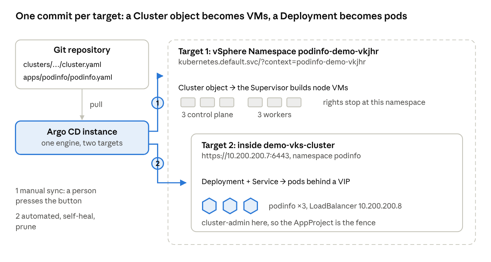
Connect the repository first, then set up target 1. The customised CLI recognises a Supervisor: it gives the instance credentials bound to the namespaces you list, so it can only ever touch those namespaces, and it registers the target under an in-cluster address with the namespace as a context parameter, https://kubernetes.default.svc/?context=<namespace>, rather than the Supervisor's external IP.
That URL is what you pass as --dest-server from now on.
vcf argocd repo add https://github.com/sorinplaton/vcf-gitops.git --name vcf-gitops
# Repository 'https://github.com/sorinplaton/vcf-gitops.git' added (public repo: no token)
vcf argocd cluster add <supervisor-context> \
--namespace podinfo-demo-vkjhr --kubeconfig ~/.kube/config
vcf argocd cluster list
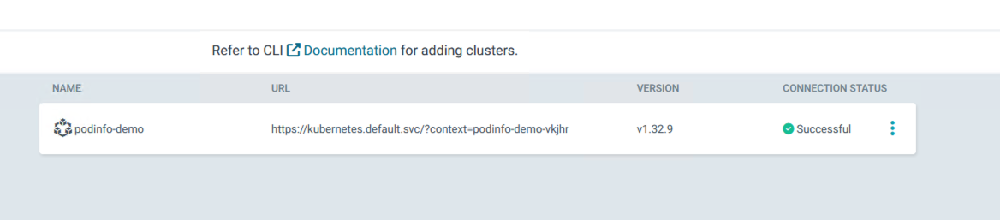
Target 1 registered: the Supervisor namespace registered as an Argo CD cluster. Note the URL form, the Supervisor's own Kubernetes version (v1.32.9) and the connection check. The VKS cluster will appear as a second row on port 6443 in step 5.
Before the first commit: three things the Supervisor needs
Argo CD will happily apply a Cluster object the Supervisor cannot build. None of the following is checked at sync time, and each one cost this lab an hour or more (don't ask how i know), so check them first.
Kubernetes releases. The Supervisor builds node VMs only from a release it knows. On a fresh Supervisor kubectl get kr can return No resources found even with a subscribed library attached, because adding a library to the Supervisor's general content libraries is not enough.
In the vSphere Client, create a subscribed content library (here VKS-1, subscription URL https://wp-content.broadcom.com/v2/latest/lib.json, download on demand), then go to Supervisor Management > Supervisors > your Supervisor > Configure > Supervisor > General, and in the Kubernetes Service section set that library as the content library.
Keep in mind this is a lab shortcut: one subscribed library pointed straight at Broadcom's public feed. In production, content libraries are managed centrally in a publish-and-subscribe model: one publisher library, which can sit in an air-gapped site (Broadcom: remote content library publisher for Supervisor releases), with every Supervisor's Kubernetes Service library subscribed to it. VM images for tenants can also be offered centrally as provider content libraries in VCF Automation (Broadcom: managing content libraries in VCF Automation).
Releases appeared 39 seconds later:
kubectl get kr
NAME VERSION READY COMPATIBLE CREATED
v1.35.5---vmware.1-vkr.1 v1.35.5+vmware.1-vkr.1 True True 14h
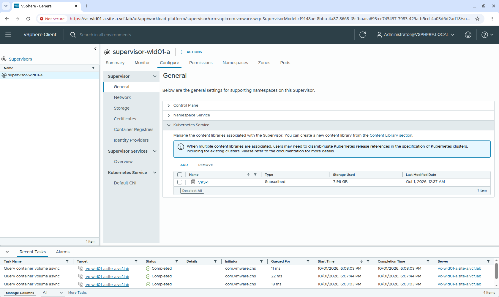
Supervisor Management > Supervisors > supervisor-wld01-a > Configure > Supervisor > General, Kubernetes Service section expanded: VKS-1, Subscribed, is the library the Supervisor builds node VMs from.
A cluster class new enough for that release. The tenant namespaces carried builtin-generic-v3.1.0 to v3.3.0 only, all labelled max-version-supported: v1.32. The newer classes live in vmware-system-vks-public, and a Cluster can reference them across namespaces. builtin-generic-v3.6.0 has no upper limit, so it pairs with v1.35.5:
kubectl get clusterclass -A --show-labels | grep max-version
kubectl apply --dry-run=server -f clusters/demo-vks-cluster/cluster.yaml # must say "created (server dry run)"
Namespace room for six VMs. Every node VM gets a 20 GiB disk, and the six VMs ask for 18 GiB of memory in total.
The small namespace class that VCF Automation applied allows 100000Mi of storage (about 98 GiB) and 10000Mi of memory, so the fifth VM was refused by the storage quota admission webhook.
Raise both before you sync. In the VCF Automation org portal the limits show under Manage & Govern > Namespaces > the namespace, memory under Capacity and storage under Storage class, in GB (20000Mi reads 19.53 GB, 200000Mi reads 195.31 GB). As the organization admin from the jump host, the change is:
kubectl --server https://auto-a.site-a.vcf.lab/cci/kubernetes -n default-project \
patch supervisornamespace podinfo-demo-vkjhr --type json -p '[
{"op":"replace","path":"/spec/classConfigOverrides/storageClasses/0/limit","value":"200000Mi"},
{"op":"replace","path":"/spec/classConfigOverrides/zones/0/memoryLimit","value":"20000Mi"}]'
kubectl -n podinfo-demo-vkjhr get storagepolicyquota # limit: 200000Mi
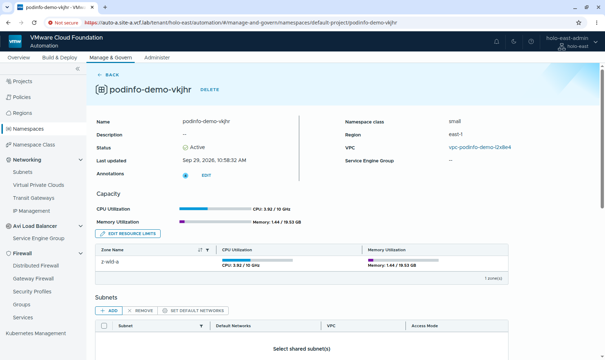
VCF Automation, Manage & Govern > Namespaces > podinfo-demo-vkjhr: the memory limit after the change, 19.53 GB (20000Mi).
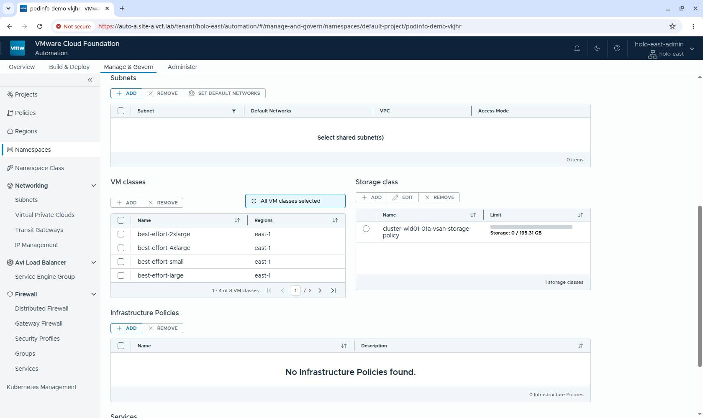
Same page, Storage class: cluster-wld01-01a-vsan-storage-policy at 195.31 GB (200000Mi).
Commit the cluster definition as clusters/demo-vks-cluster/cluster.yaml (full file, unchanged since commit 7ec073f).
The lines that matter: the cluster class and release chosen above, three control-plane nodes on best-effort-small, and one worker pool of three on best-effort-xsmall, set as a per-pool variables.overrides entry.
The argocd.argoproj.io/sync-wave: '0' annotation in the full file makes the cluster sync before anything that depends on it once add-ons arrive.
# excerpt of clusters/demo-vks-cluster/cluster.yaml
kind: Cluster
metadata:
name: demo-vks-cluster
spec:
topology:
classRef:
name: builtin-generic-v3.6.0
namespace: vmware-system-vks-public
version: v1.35.5+vmware.1-vkr.1
controlPlane:
replicas: 3 # vmClass best-effort-small (topology variable)
workers:
machineDeployments:
- class: node-pool
name: node-pool-1
replicas: 3 # vmClass best-effort-xsmall (per-pool override)
Create the Application against the Supervisor namespace and sync it. Leave this one on manual sync: it builds infrastructure, and you want a person to press the button.
vcf argocd app create demo-vks-cluster \
--repo https://github.com/sorinplaton/vcf-gitops.git --path clusters/demo-vks-cluster \
--dest-server 'https://kubernetes.default.svc/?context=podinfo-demo-vkjhr' \
--dest-namespace podinfo-demo-vkjhr
vcf argocd app sync demo-vks-cluster
vcf argocd app wait demo-vks-cluster --timeout 3600
kubectl -n podinfo-demo-vkjhr get cluster,machines -o wide # the real finish line
Timing. About 30 minutes for a clean 3 + 3 build. This lab took longer because of boot failures and a storage quota, both covered in Part 2.
Reading app wait. "Healthy" means Argo CD applied the Cluster object, not that all six VMs are ready, and its Duration is the sync, not the build.
The real finish line is the last command above: wait until kubectl get cluster,machines shows CP AVAILABLE 3 and W AVAILABLE 3.
And the Cluster reports Healthy slightly early: here the app went Healthy with five of six machines Running.
The real finish line is CP AVAILABLE 3 and W AVAILABLE 3 on the Cluster.
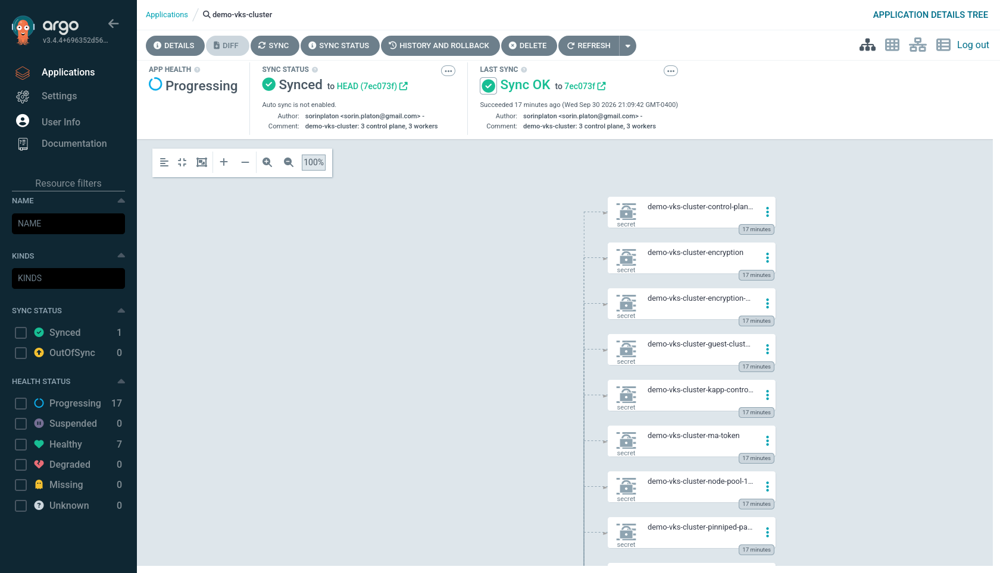
Argo CD, application demo-vks-cluster Synced to 7ec073f, health Progressing. The app holds a single object, the Cluster; everything else is the Supervisor's work. (Use the tree view: the Network view is empty for an app that contains only a Cluster.)
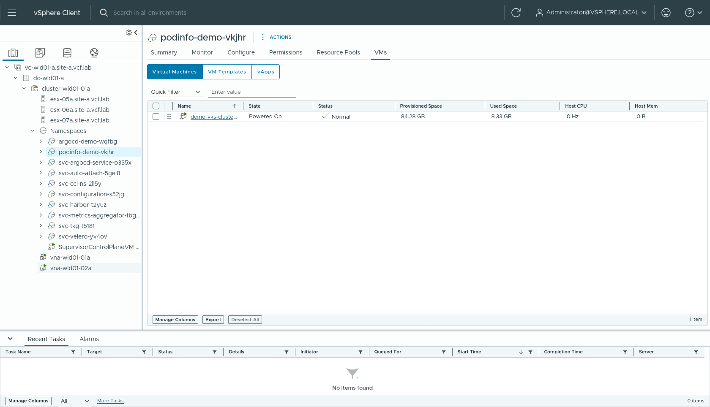
Ten minutes in: the first control-plane VM, Powered On.
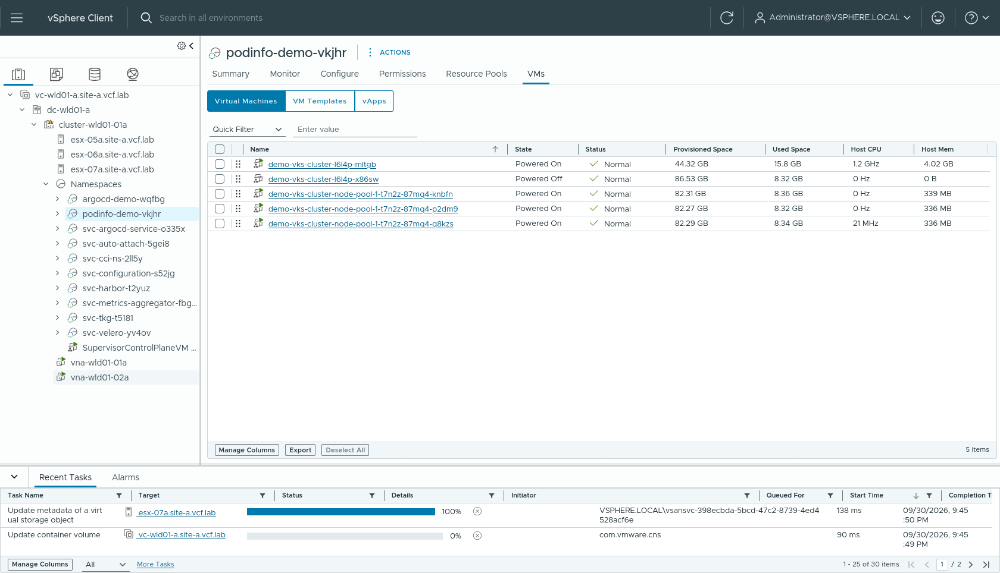
five VMs, the second control-plane VM still Powered Off, Recent Tasks busy.
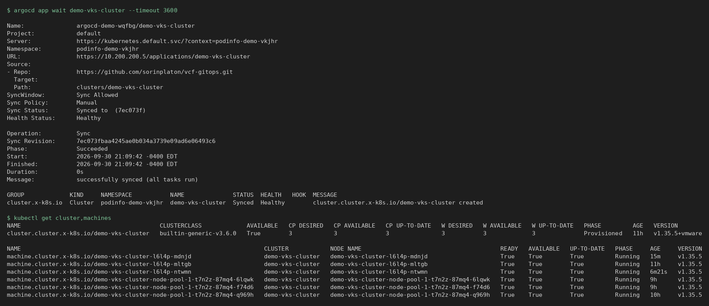
app wait ends Synced / Healthy; kubectl get cluster,machines underneath shows the real finish line, three control-plane and three worker machines Running.
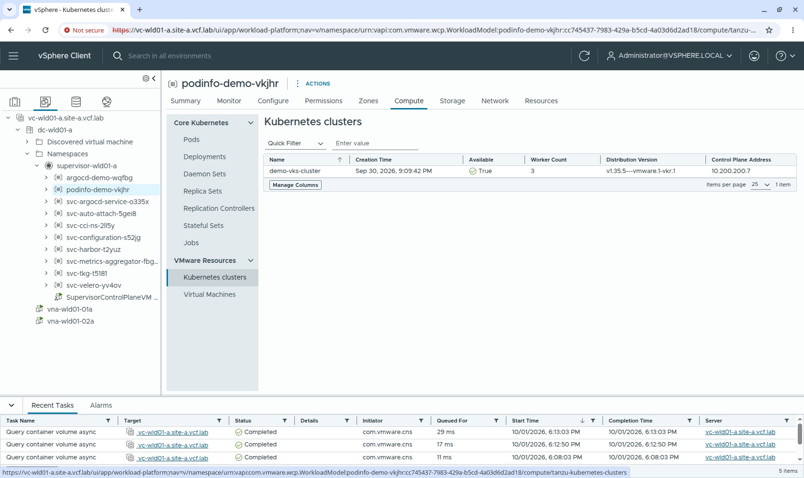
vCenter knows it is a cluster, not just six VMs: Supervisor Management > Namespaces > podinfo-demo-vkjhr > Compute > VMware Resources > Kubernetes clusters shows demo-vks-cluster, Available, 3 workers, v1.35.5, control plane at 10.200.200.7.
Step 5. Register the VKS cluster and deploy podinfo
Now register target 2. What changes from target 1: the Argo CD command is the same, the kube context is not. Adding --tanzu-kubernetes-cluster-namespace and --tanzu-kubernetes-cluster-name to the login gives a context for the cluster's own API, so vcf argocd cluster add registers https://10.200.200.7:6443 instead of the in-cluster namespace URL, and needs no --namespace.
The rights change with it. Instead of a RoleBinding scoped to one vSphere Namespace, the CLI creates an argocd-manager service account in kube-system with a ClusterRole, a ClusterRoleBinding and a long-lived token. That is standard upstream behaviour, and the thing to remember when reading the RBAC section below.
kubectl vsphere login --server 10.1.8.132 --vsphere-username administrator@vsphere.local \
--insecure-skip-tls-verify \
--tanzu-kubernetes-cluster-namespace podinfo-demo-vkjhr \
--tanzu-kubernetes-cluster-name demo-vks-cluster # creates the kube context demo-vks-cluster
vcf argocd cluster add demo-vks-cluster -y
# ServiceAccount "argocd-manager" created in namespace "kube-system"
# ClusterRole "argocd-manager-role" created
# ClusterRoleBinding "argocd-manager-role-binding" created
# Created bearer token secret "argocd-manager-long-lived-token" for ServiceAccount "argocd-manager"
# Cluster 'https://10.200.200.7:6443' added
vcf argocd cluster list
SERVER NAME VERSION STATUS
https://kubernetes.default.svc/?context=podinfo-demo-vkjhr (1 namespaces) podinfo-demo v1.32.9 Successful
https://10.200.200.7:6443 demo-vks-cluster v1.35.5 Successful
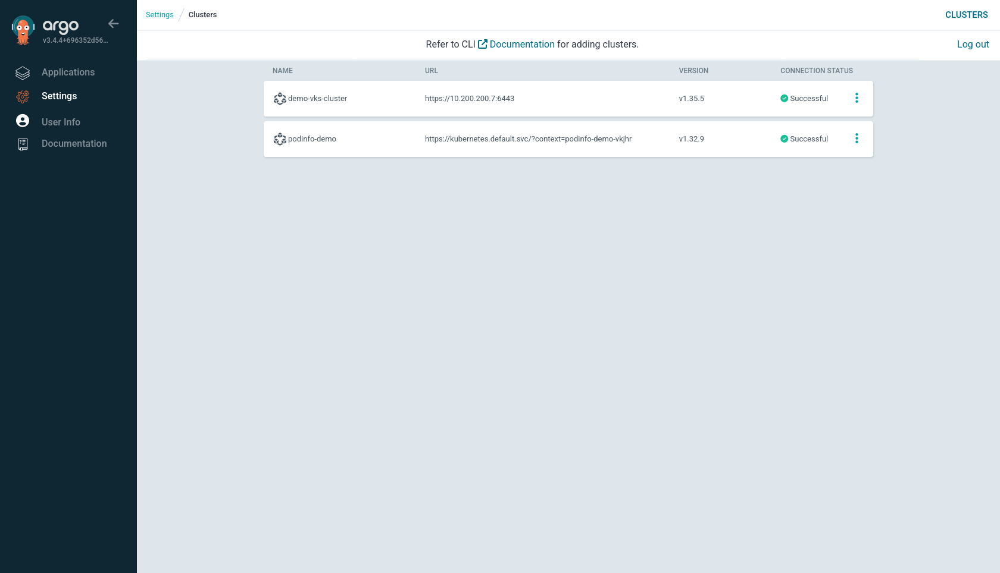
Both targets registered. Argo CD's Settings > Clusters with the VKS cluster on port 6443 (Kubernetes v1.35.5) and the Supervisor namespace on its in-cluster URL (v1.32.9), both Successful. The cluster row shows Unknown until an application targets it; that is cosmetic.
On 9.1.1, why not auto-attach? A VKSM auto-attach component can register new VKS clusters for you, but only once a policy exists, and none does by default. If
kubectl get entitymanagementpolicies -Areturns nothing, register by hand as above. Details in Part 2, Auto-attach on 9.1.1.
Holodeck only: node DNS. VKS nodes resolve registries through 10.1.1.1. Without the DNS redirect from step 2, the first pod failed with lookup ghcr.io on 127.0.0.53:53 ... i/o timeout. With it in place, check from a node before deploying:
kubectl --context demo-vks-cluster -n kube-system exec ds/antrea-agent -c antrea-agent -- \
getent hosts ghcr.io # must print an address
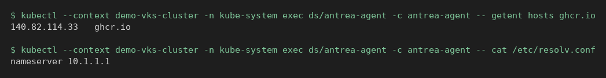
The check after the fix, run from a node through its antrea-agent pod: the resolver is still 10.1.1.1, and ghcr.io now resolves.
Commit the app as apps/podinfo/podinfo.yaml (as first committed in 9313393, with one replica). podinfo is a small Go web app made for this kind of demo: its page shows the pod that served it, so scaling is visible in a browser.
Keep the security context; it is what lets the pod run under the restricted Pod Security Admission that VKS clusters enforce. The Service is LoadBalancer, so the browser reaches it through the VPC load balancer without a port-forward.
# excerpt of apps/podinfo/podinfo.yaml
kind: Deployment
spec:
replicas: 1 # step 6 changes this line to 3
template:
spec:
securityContext:
runAsNonRoot: true
runAsUser: 1000
seccompProfile: {type: RuntimeDefault}
containers:
- name: podinfo
image: ghcr.io/stefanprodan/podinfo:6.15.0
securityContext:
allowPrivilegeEscalation: false
readOnlyRootFilesystem: true
capabilities: {drop: ["ALL"]}
---
kind: Service
spec:
type: LoadBalancer
ports: [{name: http, port: 9898, targetPort: http}]
vcf argocd app create podinfo-vks \
--repo https://github.com/sorinplaton/vcf-gitops.git --path apps/podinfo \
--dest-server https://10.200.200.7:6443 --dest-namespace podinfo \
--sync-option CreateNamespace=true \
--sync-policy automated --self-heal --auto-prune
vcf argocd app wait podinfo-vks
kubectl --context demo-vks-cluster -n podinfo get svc podinfo
# EXTERNAL-IP 10.200.200.8 PORT(S) 9898
The load balancer handed out 10.200.200.8 after the sync, and the page answered at http://10.200.200.8:9898 one second later.
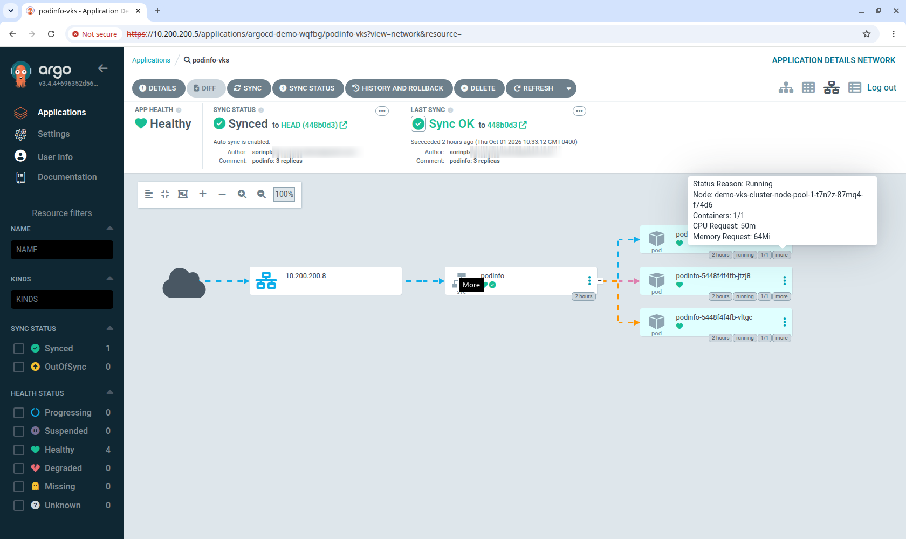
Argo CD, podinfo-vks, Network view: traffic enters at 10.200.200.8, goes through the podinfo Service to three Pods. The popover on one Pod shows the node it runs on, demo-vks-cluster-node-pool-1-t7n2z-87mq4-f74d6, one of the worker VMs from S9.
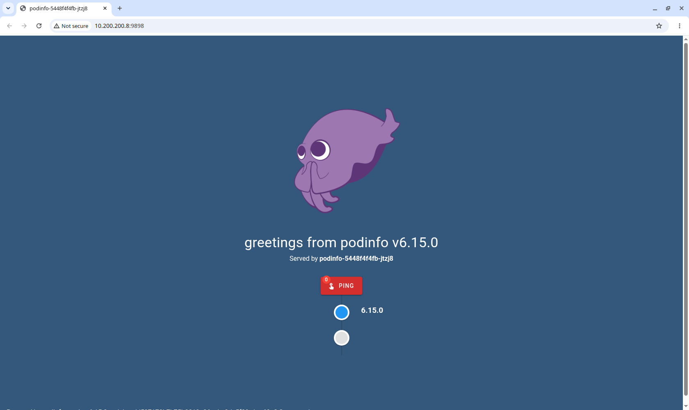
podinfo at http://10.200.200.8:9898, "greetings from podinfo v6.15.0", served by pod podinfo-5448f4f4fb-jtzj8. A container on a VM that a commit created.
Step 6. Prove it is GitOps
So far, nothing kubectl apply couldn't do. Two changes prove otherwise. podinfo-vks already has automated sync, self-heal and prune turned on; for an app without them, one command flips the switch:
vcf argocd app set podinfo-vks --sync-policy automated --self-heal --auto-prune
Now edit apps/podinfo/podinfo.yaml in Git, change replicas: 1 to replicas: 3, commit and push. Do nothing else. Argo CD polls the repository (timeout.reconciliation, three minutes by default; Refresh in the UI hurries it), so the delay depends on where in that cycle the push lands. Here commit 448b0d3 was pushed and three pods were running 16 seconds later, with no sync typed by anyone.
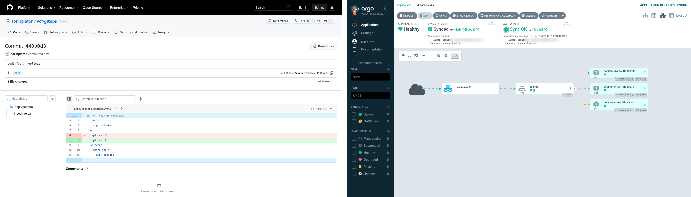
Cause and effect with no terminal in the picture: the commit diff on the left (replicas: 1 to replicas: 3), Argo CD on the right with three Pods, Synced to 448b0d3.
Second, break it by hand and watch it heal:
kubectl --context demo-vks-cluster -n podinfo scale deployment podinfo --replicas=1
kubectl --context demo-vks-cluster -n podinfo get pods -w
The count drops to one, Argo CD notices the drift, and four seconds later three pods are Ready again.
Git won.
Look for that sync in the right place: argocd app history lists only syncs to new revisions, while a self-heal is recorded in the Application's status as initiatedBy: automated.
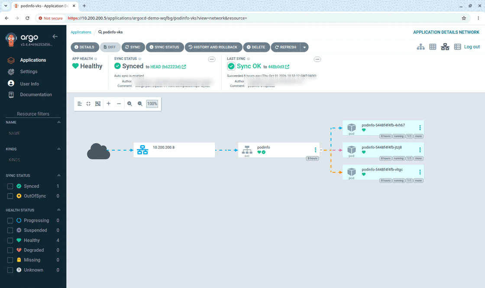
The same self-heal, as it looks in Argo CD, one frame a second: two pods terminate, the app flips to OutOfSync, and about six seconds later it is back to three pods, Synced and Healthy.
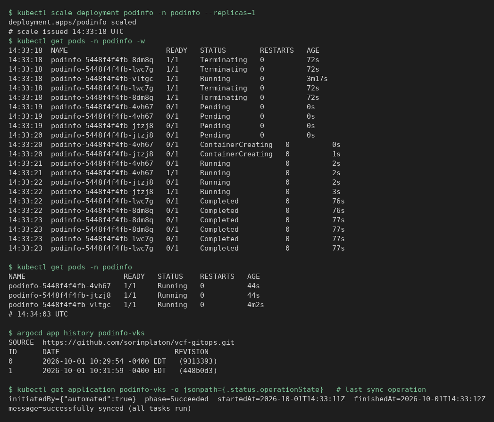
Self-heal: the manual scale to one, two pods Terminating and two new ones Running in the watch, and the Application's last operation, initiatedBy={"automated":true}, phase Succeeded.
Target 1 again: a seventh VM from one line
The same move works on the cluster itself.
Before it, the namespace memory limit went from 20000Mi to 24000Mi in VCF Automation, because seven node VMs ask for 20 GiB; storage at 200000Mi already had room.
Then one line changed in cluster.yaml, replicas: 3 to replicas: 4 under node-pool-1, through pull request #2.
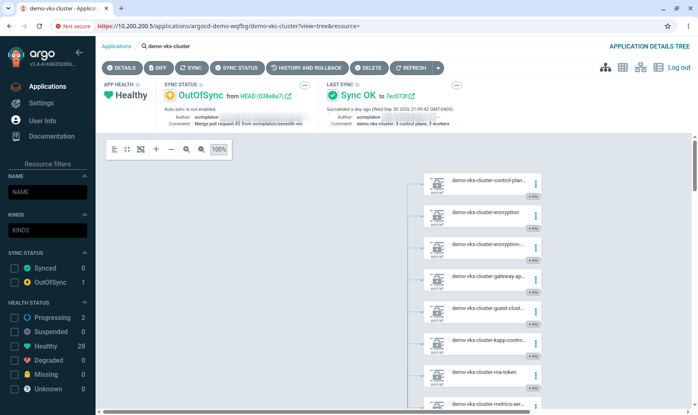
Argo CD sees the merge and waits: demo-vks-cluster is OutOfSync from 038e8a7 and stays that way, because infrastructure is on manual sync.
vcf argocd app sync demo-vks-cluster
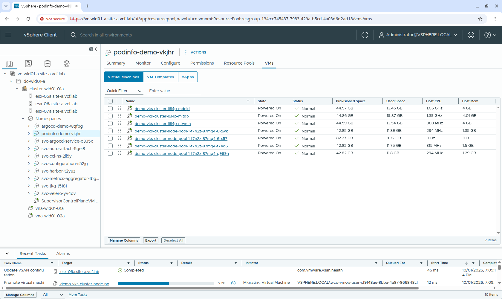
Seven VMs: the new worker …-6tx57 is powered on and booting while Recent Tasks promotes its disks.
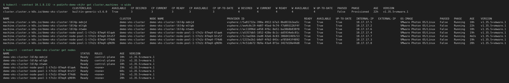
The finish line: control plane 3/3, workers 4/4, seven nodes Ready, the newest one a minute old.
The new VM booted on the first attempt. The first build was not so lucky: with five VMs provisioning at once, four stalled at boot on the lab's nested storage (Part 2, When the cluster build stalls). A single VM had no such problem.
A cluster upgrade works the same way: change the version line and commit.
The Applications belong in Git too
The vcf argocd app create commands are convenient, but they leave the Applications themselves outside Git.
The repository holds all three as YAML in argocd-apps/, exported from the live objects. kubectl diff -f argocd-apps/ printed nothing, so the files describe exactly what runs, and rebuilding the Argo CD side of the lab is one command:
kubectl -n argocd-demo-wqfbg apply -f argocd-apps/demo-vks-cluster.yaml \
-f argocd-apps/podinfo-vks.yaml -f argocd-apps/podinfo.yaml
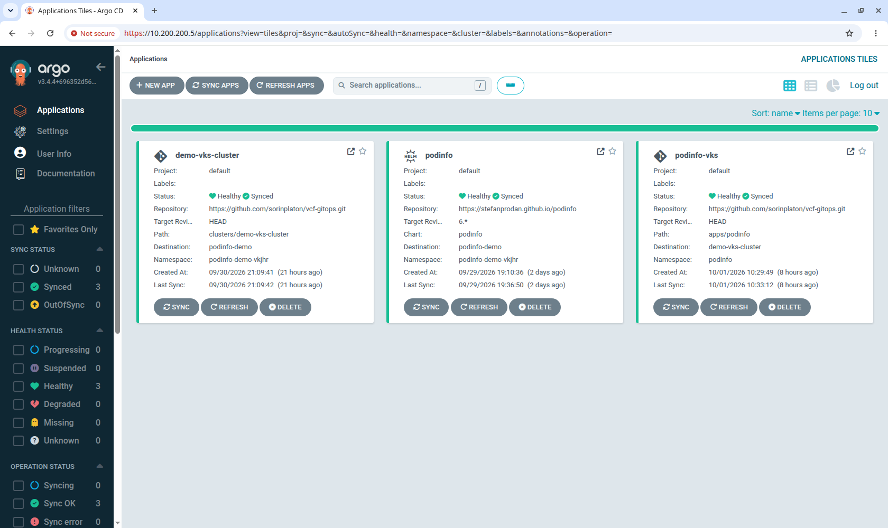
One pane for infrastructure and apps: demo-vks-cluster (the six VMs), podinfo-vks (the app inside them) and podinfo (the vSphere Pods), all Healthy and Synced.
The repository reorganisation itself went in as a reviewed pull request, and it shows GitOps behaving as it should: Argo CD picked up the merge commit on its own and the revision it reports moved from 448b0d3 to b62223d, but no sync ran and no machine changed, because nothing under the watched folders had changed.
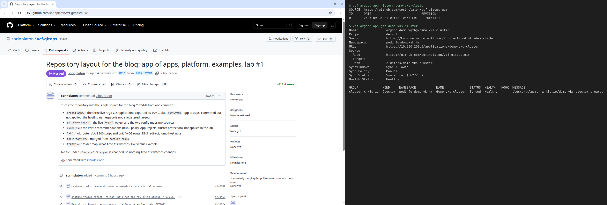
The merged pull request on the left; on the right, demo-vks-cluster still has a single sync in its history (the original build from 7ec073f) while reporting Synced to the merge commit b62223d.
The usual next step is an app of apps: a root Application pointing at argocd-apps/, so that Argo CD manages its own Applications. argocd-apps/root.yaml is in the repository but not applied.
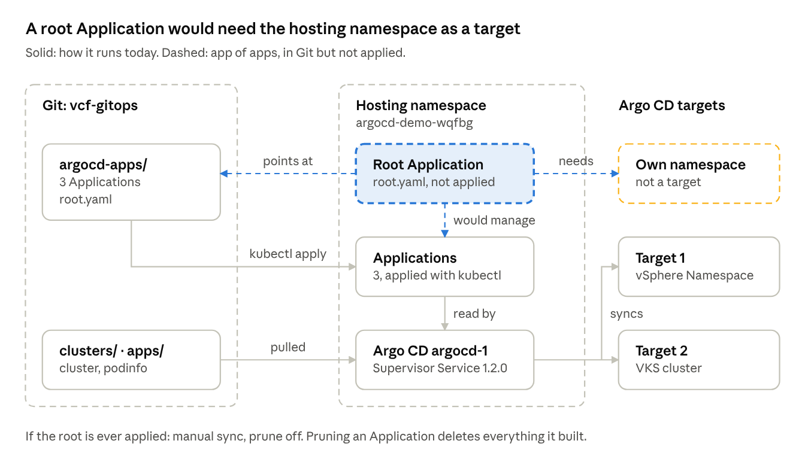
Applications live in the instance's hosting namespace, and this instance runs with cluster.inClusterEnabled=false, so that namespace is not a registered target; making it one would give the instance write access to its own namespace, which is a design decision rather than a lab fix.
Until then the Applications are versioned and reviewed in Git and applied with kubectl. If a root Application is ever applied, keep it on manual sync with prune off: pruning an Application deletes everything it built (Part 2).
The shortcut: Git straight into a namespace, no cluster
Everything above used target 2 to put podinfo inside a VKS cluster. Target 1 can run it on its own.
The same Argo CD instance carries a second application, podinfo, that installs the upstream podinfo Helm chart straight into the Supervisor namespace podinfo-demo-vkjhr.
There is no cluster to build: each pod becomes a vSphere Pod, a small VM that the ESXi host runs directly, which is why the PodVM inventory in step 3 shows podinfo-* entries next to the cluster's node VMs.
What decides how a pod is built. Argo CD has no default: every Application names a destination, and the API behind it does the building.
- Destination is the Supervisor namespace (target 1): a Deployment's pods become vSphere Pods on ESXi, a
Clusterobject becomes VKS node VMs, aVirtualMachinebecomes a VM Service VM.- Destination is the VKS cluster (target 2): pods are ordinary pods on the cluster's worker nodes.
Rule of thumb: a cluster when the app needs one (CRDs, operators, DaemonSets, cluster-wide rights), the namespace when it only needs to run.
vSphere Pods need an NSX-backed Supervisor, as in this lab.
vcf argocd app create podinfo \
--repo https://stefanprodan.github.io/podinfo --helm-chart podinfo --revision '6.*' \
--dest-server 'https://kubernetes.default.svc/?context=podinfo-demo-vkjhr' \
--dest-namespace podinfo-demo-vkjhr \
--sync-policy automated --auto-prune
vcf argocd app list # argocd-demo-wqfbg/podinfo Synced Healthy Auto-Prune
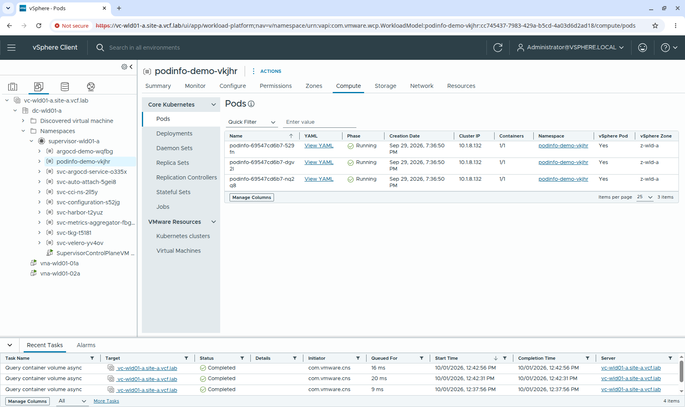
vSphere Client, Supervisor Management > Namespaces > podinfo-demo-vkjhr > Compute > Core Kubernetes > Pods: the three podinfo-69547cd6b7-* pods, Running, with the vSphere Pod column reading Yes. All three run on esx-05a itself, not on a node VM.
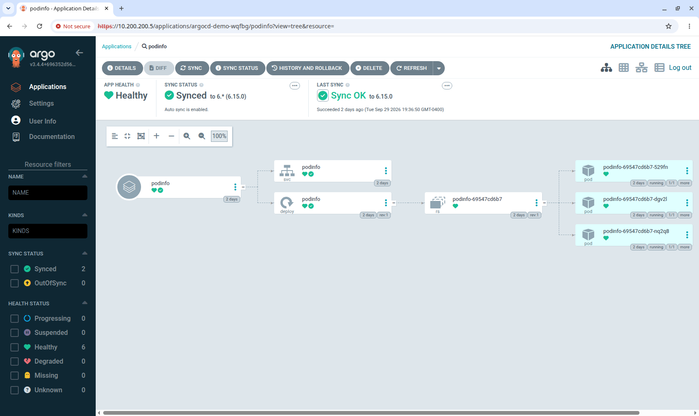
S16b. The same three pods from Argo CD's side: application podinfo, Helm chart 6.* resolved to 6.15.0, Healthy and Synced.
Which target to use for an app:
| vSphere Pods (target 1) | Inside a VKS cluster (target 2) | |
|---|---|---|
| What gets built | One small VM per pod, nothing else | Six node VMs first, then pods inside them |
| Time to first pod | Seconds | The cluster build first |
| Kubernetes you get | The Supervisor's API, scoped to one namespace | Your own cluster, with cluster-admin through the registered target |
| Good for | Single services and agents that should sit next to VMs | Anything that needs cluster-scoped objects: CRDs, operators, DaemonSets, most Helm charts |
Try this next
Three things you can do in the same lab tomorrow, each a single commit:
- Upgrade the cluster. Change
version:incluster.yamlto a newer release thatkubectl get krlists and your cluster class supports, syncdemo-vks-cluster, and watch the Supervisor roll the control-plane and worker VMs one at a time. - Put a VM in the same repository. Add a VM Service
VirtualMachineobject undervms/with the Supervisor namespace as its destination; Git now owns a VM and a container app side by side. - Turn
apps/into an ApplicationSet. Enable the ApplicationSet controller on the instance, use the Git directory generator overapps/*, and every new folder becomes a deployed app without anargocd app create.
Then read Part 2, which is where the platform team's questions live: who may change what once nobody runs kubectl apply, what one Argo CD per team actually protects, what to change before production, and everything that stopped this lab the first time, from the VLAN nobody was listening on to node VMs that would not boot. Part 2: who controls what, and what breaks
Vocabulary
| Term | Meaning in this post |
|---|---|
| Supervisor | The Kubernetes control plane vSphere runs on a cluster once Workload Management is enabled. Every other object here is created through it. |
| vSphere Namespace | A tenant boundary on the Supervisor: resource limits, permissions, VM classes, storage policies and, with VPC networking, its own VPC. |
| VKS cluster | A Kubernetes cluster made of VMs (control-plane and worker nodes) that the Supervisor creates and lifecycles from a Cluster object. |
| Supervisor Service | An add-on enabled once per Supervisor from the vSphere Client. The Argo CD Operator, Harbor and Contour ship this way. |
| Operator | A controller that owns the lifecycle of one product: it watches for its object type (ArgoCD) and builds, upgrades and repairs the instance behind it. |
| Argo CD instance | One running Argo CD: API server, repo server, application controller and Redis, deployed as PodVMs in a hosting namespace, with a UI on a load-balancer VIP. |
| PackageInstall (kapp) | The Carvel object the Operator renders to install the instance; it reconciles every 10 minutes and owns the Kubernetes objects. |
| PodVM | How a pod runs on a Supervisor: as a small VM. A pod that cannot be built (missing secret) fails terminally as ProviderFailed. |
| Application | Argo CD's unit of deployment: one Git folder, one target, one sync policy. |
| AppProject | The fence around Applications: allowed repositories, destinations, resource kinds, sync windows. |
| Target / cluster secret | A registered destination: an API endpoint plus the credential Argo CD holds there, created by argocd cluster add. |
| Sync, drift, self-heal, prune | Sync applies Git to the target; drift is any difference between the two; self-heal reverts drift automatically; prune deletes what Git no longer contains. |
| Sync wave | An annotation that orders resources within one sync, so a cluster lands before its add-ons. |
| VPC | NSX Virtual Private Cloud: the isolated network domain behind a vSphere Namespace, with its own subnets, SNAT and optional load balancer. |
| Transit gateway (TGW) | The per-project NSX gateway that connects VPCs to the outside; here it performs SNAT on the VNA cluster. |
| Distributed VLAN Connection (DVC) | External connectivity for a transit gateway through a plain VLAN, with no Tier-0 or edge: a VLAN ID, an external gateway address and an IP block on that VLAN. |
| VNA | The NSX appliance cluster that provides stateful services (SNAT, LB) for VPCs on a Distributed VLAN Connection. |
| NCP | The NSX Container Plug-in on the Supervisor that realises Services and namespaces in NSX. |
| Holodeck | Broadcom's nested VCF lab: a whole fleet on one ESXi host, with the holorouter as its gateway and DNS. |
| Kubernetes release (kr) | A Supervisor object naming a Kubernetes version and the node OS image that implements it. Releases appear only once a content library is set as the Supervisor's Kubernetes Service library. |
| ClusterClass | The template a Cluster object is built from. Each version supports a range of Kubernetes releases, so the class and the release must be chosen together. |
| MachineHealthCheck | Cluster API's watchdog. It deletes and recreates a node VM that has not joined the cluster within a timeout (one hour in this lab). |
Screenshot checklist
| # | What is in frame | Where |
|---|---|---|
| S9 | Six cluster VMs Powered On (hero), with S9a and S9b during the build | The moment, step 4 |
| S1 | Services page, Argo CD 1.2.0 installed | Step 1 |
| S2 | Namespaces list | Step 2 |
| S3, S3b | VCF Automation Enable load balancing switch (S29); NSX org VPC load balancer; its nsxLoadBalancerPath |
Step 2 |
| S4, S5 | ArgoCD object Ready and pods; argocd-server VIP |
Step 3 |
| PodVM inventory | Hosting, Operator, auto-attach and podinfo PodVMs | Step 3 |
| S7 | Supervisor namespace registered as a target | Step 4 |
| S22, S23, S23b | Kubernetes Service library; namespace memory and storage limits | Step 4 prerequisites |
| S8, S10, S25 | Cluster app Progressing; app wait with 3 + 3 machines; vCenter's cluster view |
Step 4 |
| S11 | Settings > Clusters, two targets | Step 5 |
| S12, S13 | podinfo-vks Network view with node popover; podinfo page |
Step 5 |
| S14, S15, S26 | Commit beside three pods; self-heal watch; self-heal animation | Step 6 |
| S19, S21 | All three apps; pull request with no sync | Step 6 |
| S20 | Repository at tag blog-part1 |
The repository |
| S16a, S16b | vSphere Pods in vCenter and in Argo CD | The shortcut |
Also in step 6: S17a to S17c, the seventh VM. Every capture comes from the lab run.
Sources
- The VLAN Nobody Was Listening On, the lab post-mortem behind this walkthrough: every dead end the Holodeck lab hit first, so yours does not have to (Argo CD Service 1.2.0, Argo CD 3.4.4, VCF 9.1.0 Holodeck)
- Argo CD for VKS: vCenter vs VCF Automation, the companion explainer, for the two delivery paths and how they scale across regions
- Install the VMware Argo CD Operator as a Supervisor Service, Broadcom TechDocs
- Manage Resources in vSphere Namespaces with Argo CD and Manage Resources in VKS Clusters by Using Argo CD, Broadcom TechDocs
- Deploy a VKS Cluster and Configure VKS Add-ons by Using Argo CD and Deploy an Example Guestbook Application on a VKS Cluster with Argo CD, Broadcom TechDocs
- VMware Cloud Foundation 9.1 documentation bundle (PDF): VCF Automation 9.1.1.0 release notes (p. 632), 9.1.1 bill of materials (p. 565), VCF Edge: Single Node with Argo CD Design Blueprint, authentication and sizing design (pp. 1371–1373), VCF Download Tool artifacts commands (pp. 3978–3980)
- Argo CD RBAC configuration and Projects, upstream Argo CD documentation
- holodeck-automation README, for the jump host's route and DNS requirements
- Air-gapped VCF 9.1 guide, vmware/vsphere-supervisor on GitHub, for the VCF CLI install commands, the Supervisor Service YAML variants and the
argocd-servicebundle reference - VCF CLI context command reference and Connect to a VKS Cluster with VCF CLI, Broadcom TechDocs
- Using VCF CLI to login to vSphere Supervisor when configured with VCF Automation, William Lam
- sorinplaton/vcf-gitops at tag blog-part1, the repository every file and commit in this post comes from
Part 2: who controls what, and what breaks
Part 1 built a VKS cluster and an app from one Git repository. This part is for the reader who now asks the two questions every platform team asks next: if nobody runs kubectl apply any more, who is allowed to change what, and what happens on the day it does not work.
Who controls what
GitOps does not remove access control; it moves it. Once nobody runs kubectl apply, the questions become: who can change the desired state, what is Argo CD allowed to do with it, and what can the engine physically reach. Four layers answer those, and each is owned by a different person.
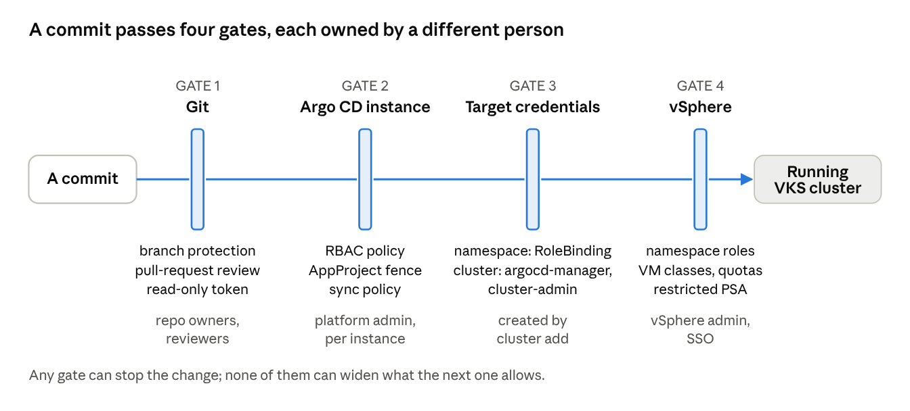
Layer 1: Git decides what may become desired state
This is the CI control most teams already have. Protect main so nothing lands unreviewed, require a pull-request review, and use CODEOWNERS so the folder clusters/ needs a platform reviewer while apps/podinfo/ needs the app team. Give Argo CD a read-only token when you run argocd repo add: it only ever pulls, so it should never be able to push. With that in place a bad change needs a reviewer to miss it, and the audit trail is the commit history.
Layer 2: the Argo CD instance decides who may act, and inside which fence
Controls here are per instance, so every team that gets its own ArgoCD object gets its own copy of them. Three objects matter. The RBAC policy maps users or SSO groups to roles and roles to verbs; anyone logged in is read-only until a policy says otherwise. The AppProject is the fence an Application must fit inside: which repositories may be a source, which cluster-plus-namespace pairs may be a destination, which resource kinds may be created, and when syncs may run. The Application's sync policy is the per-app dial: manual sync means a human presses the button after review; automated means Git is applied as soon as it changes; selfHeal reverts manual drift; prune deletes objects removed from Git.
The recommended layout is two Projects per instance, infra (Supervisor as the only destination, cluster.x-k8s.io and addons.kubernetes.vmware.com kinds allowed) and apps (VKS cluster endpoints only, no cluster-scoped kinds). An app team whose Applications live in apps cannot point one at the Supervisor even if their RBAC role lets them create Applications, because the Project refuses the destination. The full policy.csv and AppProject YAML are in Appendix B.
Layer 3: the credentials Argo CD holds on each target
Whatever the RBAC policy and Projects say, the engine can only do what its service account on the target allows. argocd cluster add creates those credentials and stores them as cluster secrets in the hosting namespace, and the two targets give very different rights:
| Target | Service account | Rights | Consequence |
|---|---|---|---|
| Supervisor namespace | Credentials bound by a RoleBinding to each namespace you listed | Namespace-scoped | The instance can only create Supervisor objects in namespaces you named; other tenants' namespaces are unreachable even to admin |
| VKS cluster | argocd-manager in kube-system |
cluster-admin |
Anything Argo CD applies inside that cluster is unrestricted; the fence is the AppProject, so do not skip it |
This is why one Argo CD per team is a real security boundary on VCF, not just tidiness: a team's instance holds credentials only for its own namespaces and clusters. The Operator makes instances cheap, so use that.
Auto-attach on 9.1.1: registering target 2 without the CLI
Part 1 registers the VKS cluster by hand with vcf argocd cluster add. From 9.1.1 the Supervisor Service also ships a VKSM auto-attach component that can attach new VKS clusters to an Argo CD instance on its own, creating the Layer 3 credentials above without anyone running the CLI. It does not add a new kind of target; it automates registering target 2.
It acts on policy, and no policy exists by default. In this lab the auto-attach pod was running in svc-auto-attach-5gei8, yet:
kubectl get entitymanagementpolicies -A
# No resources found
An hour and 46 minutes after the cluster finished syncing, vcf argocd cluster list still had a single row, the vSphere Namespace. The policy format itself was not tested here.
Two practical points follow. First, check before relying on it: if that command is empty, register the cluster by hand as in Part 1. Second, once a policy does exist, treat it like any other Layer 3 control: it decides which clusters an Argo CD instance can reach, so it belongs in the same review as the argocd-manager service accounts it would otherwise replace.
Layer 4: vSphere decides who may reach the platform at all
Underneath everything sits vSphere SSO and namespace permissions. Creating the ArgoCD object needs edit on the hosting namespace; creating a VKS cluster through target 1 needs the instance's service account, which the namespace owner granted with cluster add; and what that cluster may be is bounded by the VM classes, storage policies and quotas the vSphere admin attached to the namespace. Humans reach a VKS cluster with vcf context create, which maps their vSphere role on the namespace to a role inside the cluster, and the cluster itself enforces the restricted Pod Security Admission profile, which is why podinfo carries a security context.
So who controls a VKS cluster?
Three parties, in order of precedence:
- The vSphere admin owns the namespace the cluster lives in. They decide which VM classes and storage it may use, who has edit on the namespace, and whether an Argo CD instance is allowed in through
cluster add. Delete the namespace and the cluster goes with it. - The platform team, through Git and the
infraProject. The cluster's shape (versions, node counts, add-ons) is theClusterobject in Git; changing it means a reviewed commit and a sync by someone whose Argo CD role allows syncinginfra/*. - The app team, through Git and the
appsProject. They control what runs inside the cluster and nothing about the cluster itself: their Project's destination is the VKS API endpoint, their RBAC role reachesapps/*only, and even Argo CD's cluster-admin credential can only be used through Applications that fit that Project.
The day-2 operations then fall out naturally. Upgrading a cluster is a commit to version by the platform team; scaling a node pool is a commit to replicas; adding a team is a new Project, a new Git folder with its CODEOWNERS line, and a g line in the RBAC policy.
Deleting an Application deletes what it built
The same loop that turns a commit into six VMs turns a delete into zero. Deleting an Application from the Argo CD UI, or with argocd app delete, is a cascading delete by default: every resource the Application manages is deleted with it. For demo-vks-cluster that resource is the Cluster object, and the Supervisor answers by deleting the three control-plane VMs, the three worker VMs, their disks, and everything running inside the cluster, including the workloads of podinfo-vks. The VKS target in Argo CD is left pointing at an API that no longer exists.
Two other paths lead to the same result:
- Prune. With prune enabled on the Application, removing or renaming
clusters/demo-vks-cluster/cluster.yamlin Git deletes the cluster on the next sync. This is one reasondemo-vks-clusterruns with manual sync and no prune. - kubectl on the Application. When the Application carries the
resources-finalizer.argocd.argoproj.iofinalizer,kubectl delete applicationcascades exactly like the UI. Without the finalizer, the resources stay.
The safeguards, from the one that protects the most to the one that protects the least:
- Mark the Cluster object as never deleted or pruned by Argo CD.
Delete=falsekeeps it when the Application is deleted;Prune=falsekeeps it when it disappears from Git, and the Application shows OutOfSync instead. The cluster in Part 1 does not carry this annotation; a production repository should. The snippet is in the repository as examples/protect-cluster.yaml.
metadata:
name: demo-vks-cluster
annotations:
argocd.argoproj.io/sync-wave: '0'
argocd.argoproj.io/sync-options: Delete=false,Prune=false
- Delete without cascading when removing an Application on purpose.
argocd app delete demo-vks-cluster --cascade=falseremoves only Argo CD's tracking; the cluster and its VMs keep running. - Take the delete verb away. In the RBAC policy, grant
applications, deleteoninfra/*to a break-glass role only, not to the everyday platform role. Thep, role:platform, applications, *, */*, allowline in Appendix B is too broad for production for exactly this reason. - Sync windows help with prune, not with deletes. A deny window on the
infraProject stops syncs, and therefore pruning, outside change hours, but it does not stop someone deleting the Application.
Nothing on the vSphere side undoes the deletion: the VMs are removed through the Supervisor like any other Cluster API teardown. Recovery means syncing the Application again and waiting for a new build, with new VMs and an empty cluster.
Recommendations for production
The lab cut corners on purpose. Before this pattern carries anything that matters:
- HA the instance. Set
server,repoandcontrollerreplicas above one in theArgoCDspec; the Operator handles the rest. Raise the default resource limits (controller 2 CPU / 2 GB, repo server 1 CPU / 0.5 GB) once you have more than a handful of apps; Broadcom calls the defaults proof-of-concept values. - OIDC, not the local admin. Point the instance at your identity provider and map groups in the RBAC policy; rotate the initial admin password out of existence.
- Manual sync on
infra, automated onapps. A change to node counts or Kubernetes version should wait for a person to press Sync; an app rollout should not. - Enable the ApplicationSet controller on day one. It ships with the Operator but is off by default; you will want it the moment you have a second cluster.
- Regional Harbor. Mirror the podinfo image and every add-on package into Harbor so a cluster build never depends on internet reachability from the workers.
- Own the DVC gateway before enabling the service. In production the gateway address of a Distributed VLAN Connection belongs to the network team; confirm it answers ping and ARP, and that DNS answers UDP from the new VLAN, before the first image pull.
- Protect infrastructure from deletion. Annotate every Cluster object with
argocd.argoproj.io/sync-options: Delete=false,Prune=false, and keep the delete verb oninfra/*for a break-glass role, as described above.
Under the hood: how the tenant VPC reaches the outside
Part 1 kept the lab to one drawing. This one zooms into the Supervisor's networking: how a pod in the holo-east project gets out through the transit gateway and VLAN 200, side by side with the system namespaces on VLAN 24. It is the background to most of what follows in When it breaks.
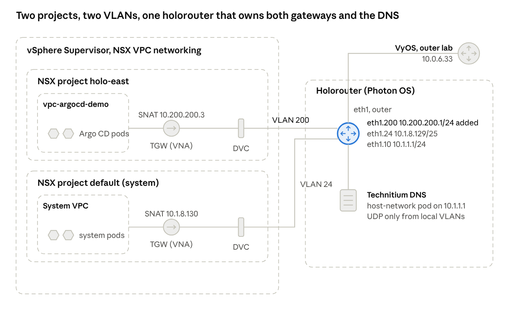
The tenant holo-east was created as a VCF Automation organization. That gives it its own NSX project, a transit gateway, a private IP block and two VPCs, one per vSphere Namespace. Its external connectivity is a Distributed VLAN Connection (DVC) rather than an edge-backed Tier-0: the transit gateway SNATs outbound traffic on the VNA cluster to an address from the external block and hands the frame to whatever answers ARP for the DVC's gateway address on VLAN 200. Inbound needs no routing at all, because the physical side sees the external block as directly connected. No BGP, no static routes on the NSX side, no edge.
The Supervisor's own system namespaces use exactly the same pattern in the NSX default project on VLAN 24, and had been pulling images for days. That made them the perfect control group: the only difference between working and broken was who sat at the far end of the VLAN.
| Object | Where configured | Value |
|---|---|---|
| VPC vpc-argocd-demo | Created by VCF Automation for the org namespace, in NSX project holo-east | pods 172.31.0.0/27 (from the private TGW block), private 10.24.24.0/24 |
| Transit gateway SNAT | NSX, realised automatically by the connectivity profile | outbound source 10.200.200.3 |
| DVC d-vlan-1 | NSX, created by VCF Automation regional networking | vlan_id 200, gateway_addresses 10.200.200.1/24, block 10.200.200.0/24 |
| Default-project DVC | NSX, created at Supervisor enablement | VLAN 24, gateway 10.1.8.129/25, block 10.1.8.128/25; SNAT 10.1.8.130 |
| VPC load balancer | NSX UI, on each org VPC, size Small; added by hand | published to the Supervisor as nsxLoadBalancerPath; Argo CD VIP 10.200.200.5 |
| Holorouter eth1.24 | Already present in Holodeck | 10.1.8.129/25, VLAN 24 |
| Holorouter eth1.200 | Added as a sub-interface, persisted by a oneshot systemd unit | 10.200.200.1/24, VLAN 200, MTU 8000 |
| Holorouter DNS | Technitium, unchanged | answers on 10.1.1.1 (VLAN 10); UDP only from locally attached VLANs |
| Holorouter DNAT for VLAN 200 | Added for the VKS nodes (Part 1, step 5) | UDP 53 to 10.1.1.1 from VLAN 200 redirected to 10.200.200.1:53 |
| VyOS eth1 vif 200 | Removed; it briefly owned 10.200.200.1 on day 2 | replaced by static route 10.200.200.0/24 next-hop 10.0.6.33 so upstream routing still reaches the block |
Why the gateway ended up on the holorouter and not on the VyOS is the story of the post-mortem, summarised just below. The short form: putting VLAN 200 next to VLAN 24 on the router that already hosts the DNS made the new VPC a local client of that DNS, which is the only kind of client it answers over UDP. The VKS nodes were a later surprise: they are configured with 10.1.1.1 as their resolver and still got no UDP answer from that address, while the holorouter's VLAN 200 address, 10.200.200.1, answered them. Hence the extra DNAT rule.
When it breaks
The first attempt at step 3 in this lab produced no running pods at all. The full investigation is in the companion post-mortem, The VLAN Nobody Was Listening On; the short version is three root causes and the debris they leave behind.
| Root cause | Symptom | Fix |
|---|---|---|
Nobody on VLAN 200. VCF Automation created the DVC with gateway 10.200.200.1, but no router owned that address |
Every Image object stuck in Resolving then Failed; the fetcher reported lookup projects.packages.broadcom.com: i/o timeout |
Sub-interface eth1.200 with 10.200.200.1/24 on the holorouter, next to VLAN 24 |
| DNS answered TCP but not UDP from outside. The lab DNS replied only to clients on its own or a locally attached VLAN; a gateway on the VyOS made the VPC an outside client | Same timeout after the gateway existed; dig +tcp worked, plain dig did not |
Same fix: with VLAN 200 on the holorouter the VPC is a local client |
| Pre-created VPCs have no load balancer. The NSX operator only creates VPC LBs for VPCs it creates itself | argocd-server EXTERNAL-IP <pending>; NCP logging NCP00270 Lbs <ns> is not found under a generic Generic error occurred during realizing network for Service |
Create the LB on each org VPC in the NSX UI, wait one operator sync |
Two things stay broken after the network is fixed:
- The one-shot Job
argocd-redis-secret-initburned its retries during the outage, and kapp will not recreate a failed Job that already exists. Every new pod then dies withsecret "argocd-redis" not found. Delete the Job; the nextPackageInstallreconcile (10 minutes) brings it back. - Because Supervisor pods are VMs, a pod with a missing secret goes to the terminal
ProviderFailedphase and the ReplicaSet replaces it every 15 seconds. Three hours produced 264 corpses.kubectl delete pods -n <ns> --field-selector status.phase=Failedcleans up.
kubectl delete job argocd-redis-secret-init -n argocd-demo-wqfbg
kubectl delete pods -n argocd-demo-wqfbg --field-selector status.phase=Failed
The lesson that generalises beyond Holodeck: a Distributed VLAN Connection's gateway address is a promise you make to NSX. Confirm it with ping and ARP, and test DNS over UDP from the new VLAN, before blaming the Operator.
When the cluster build stalls
Part 1 quotes the clean stage timings. The wall clock in this lab was 11 hours 43 minutes from sync to a ready 3 + 3 cluster, and none of that time was Git's or Argo CD's: the application was Synced within seconds and stayed that way while the Supervisor fought the problems below. Argo CD does not help much here, because the app holds one Cluster object and reports Progressing until it is done. Watch the Supervisor instead:
kubectl -n podinfo-demo-vkjhr get cluster,machines -o wide
kubectl -n podinfo-demo-vkjhr get vm -o wide
kubectl -n podinfo-demo-vkjhr get events --sort-by=.lastTimestamp | tail -20
| Symptom | What it was | Fix |
|---|---|---|
kubectl get kr says No resources found, so no release can be referenced |
A content library was attached to the Supervisor, but none was set as the Kubernetes Service library | Set the subscribed library as the Kubernetes Service content library (Part 1, step 4); releases appear within a minute |
VMs Powered On with no IP; Machine condition WaitingForNetworkAddress; VM condition VMware Tools is not running; the console shows Failed to mount /sysroot and Entering emergency mode |
Four of the first five node VMs stopped at boot. No root cause was established. The disk promotion log of a stuck VM showed transfer rates falling to 0 kB/s, against 85 MB/s for the VM that booted, which points at nested storage under parallel load | Nothing was changed. The cluster's MachineHealthCheck replaced each stuck machine after its one-hour startup timeout, and replacements eventually booted. The last two VMs, created one at a time, booted on the first try. vCenter refuses a manual reset of these VMs, even for administrator@vsphere.local, so let Cluster API do it |
vcf argocd app wait times out after 3600 s with the app Synced / Progressing |
The build was still running, for the reason above | Raise --timeout, or stop waiting on Argo CD and watch the Machines |
A VM is never created; the VSphereMachine says insufficient storage quota for storage policy |
Six 20 GiB node disks do not fit the small namespace class's 100000Mi |
Raise the namespace's storage limit (and memory, for 18 GiB of node VMs) in VCF Automation; the VM is created within seconds of the change |
Pods in ImagePullBackOff: lookup ghcr.io on 127.0.0.53:53 ... i/o timeout |
The nodes' resolver, 10.1.1.1, did not answer UDP from VLAN 200 | DNAT on the holorouter from 10.1.1.1:53 to 10.200.200.1:53 for VLAN 200 (Part 1, step 5) |
| The VKS cluster never appears in Settings > Clusters | Auto-attach is running but has no EntityManagementPolicy to act on | vcf argocd cluster add demo-vks-cluster, or define the policy |
error: You must be logged in to the server (Unauthorized) a few hours in |
The kubectl vsphere login token expired |
Log in again; long builds outlive a session |
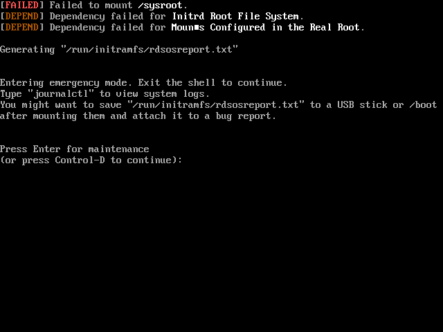
S27. What a stuck node looked like from vCenter during the first build, captured with govc vm.console -capture: the guest never mounted its root file system, so VMware Tools never started and the VM never reported an IP. The seventh VM, added later on its own, booted on the first attempt.
The lesson for a demo: build the cluster the day before, or at least start the sync before the audience arrives. The commit-to-VM moment is real and fast; a nested lab's storage is not.
Appendix A: the jump host
Everything in Part 1 is run from one Ubuntu VM on the outer lab network, built from cloud-init. It is not inside Holodeck, so it needs two things before any VCF tool works: a route into the Holodeck networks through the VyOS, and name resolution for *.vcf.lab. Both live in netplan so they survive a reboot.
# example file name; on the lab jump host the same route and DNS sit in a NetworkManager-generated file under /etc/netplan
network:
version: 2
ethernets:
ens192:
routes:
- to: 10.1.0.0/20 # Holodeck management, VLAN 24 and the SNAT/VIP block behind VLAN 200
via: 10.0.6.33 # the VyOS
nameservers:
addresses: [10.0.4.17] # resolves *.vcf.lab; fall back to IPs if you skip this
search: [vcf.lab]
sudo netplan apply
ip route get 10.1.1.24 # NSX Manager of the workload domain, via 10.0.6.33
dig +short sddcmanager-a.site-a.vcf.lab
The tools, in the order they are used. All Broadcom binaries come from the support portal download for VCF 9.1 (VCF Consumption CLI, its plugin bundle, and the Argo CD Supervisor Service, which is where the customised argocd CLI ships).
# VCF CLI and its plugin bundle
tar -xzvf VCF-Consumption-CLI-Linux_AMD64-9.1.0.tar.gz
sudo install ./vcf-cli-linux_amd64 /usr/local/bin/vcf
mkdir -p ~/vcf-plugin-bundle
tar -xvzf VCF-Consumption-CLI-PluginBundle-Linux_AMD64-9.1.0.0.25305443.tar.gz -C ~/vcf-plugin-bundle/
vcf plugin install all --local-source ~/vcf-plugin-bundle/
vcf version && vcf plugin list # argocd v1.2.0 installed
# kubectl and the vSphere plugin, served by the Supervisor itself
curl -sk https://<supervisor-ip>/wcp/plugin/linux-amd64/vsphere-plugin.zip -o vsphere-plugin.zip
unzip -o vsphere-plugin.zip && sudo install bin/kubectl bin/kubectl-vsphere /usr/local/bin/
# Argo CD CLI: on this jump host it is the argocd plugin of the VCF CLI, typed `vcf argocd ...`.
# The Argo CD Supervisor Service download also carries a standalone customised binary;
# if you install that one instead, drop the `vcf` prefix from the commands in Part 1.
vcf argocd version # v1.2.0 (the plugin takes no --client flag)
# Carvel tools, to read the service bundle the Operator installs from
curl -L https://carvel.dev/install.sh | sudo bash # imgpkg, kapp, ytt, kbld
# everything else
sudo apt-get install -y git dnsutils jq
Log in once per Supervisor and once per VKS cluster. vcf context create writes the credentials into ~/.kube/config (or $KUBECONFIG), so kubectl and argocd use them without further flags; kubectl vsphere login is the older equivalent and still works.
# Supervisor, as the vSphere admin; the context name is yours to pick
vcf context create sv-a --endpoint https://<supervisor-ip> \
--username administrator@vsphere.local --type k8s
vcf context use sv-a:argocd-demo-wqfbg # hosting namespace
# a VKS cluster, once it exists (Part 1, step 5)
vcf context create demo-vks --endpoint https://<supervisor-ip> \
--username administrator@vsphere.local --type k8s \
--workload-cluster-namespace podinfo-demo-vkjhr --workload-cluster-name demo-vks-cluster
vcf context list
# what the lab run actually used, and what to re-run when kubectl says Unauthorized
kubectl vsphere login --server 10.1.8.132 --vsphere-username administrator@vsphere.local \
--insecure-skip-tls-verify # Supervisor context 10.1.8.132
kubectl vsphere login --server 10.1.8.132 --vsphere-username administrator@vsphere.local \
--insecure-skip-tls-verify --tanzu-kubernetes-cluster-namespace podinfo-demo-vkjhr \
--tanzu-kubernetes-cluster-name demo-vks-cluster # context demo-vks-cluster
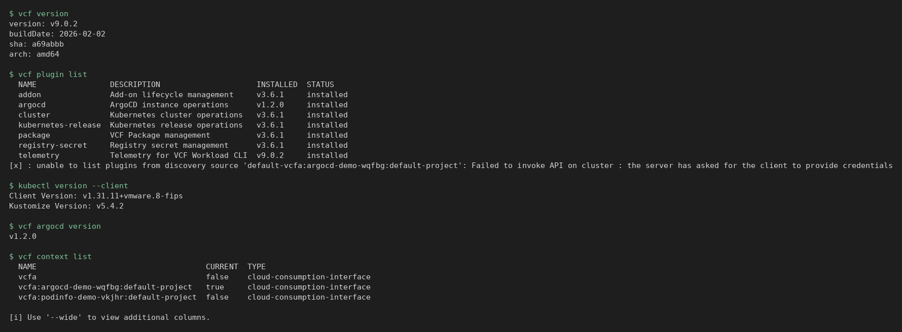
S0. The jump host's toolset: VCF CLI v9.0.2 with the argocd plugin v1.2.0, the Supervisor's kubectl (v1.31.11), and the VCF Automation contexts.
The repository holodeck-automation on the same host holds the PowerShell helpers used around the lab (for instance enabling SSH on the VNA nodes through the NSX API); none of them are needed for this walkthrough.
Appendix B: RBAC policy and AppProject
The RBAC policy lives in the argocd-rbac-cm ConfigMap in the hosting namespace. The default policy for anyone logged in is role:readonly; only admin has role:admin out of the box.
# argocd-rbac-cm data.policy.csv
p, role:platform, applications, *, */*, allow
p, role:platform, projects, *, *, allow
p, role:platform, clusters, *, *, allow
p, role:app-team, applications, get, apps/*, allow
p, role:app-team, applications, sync, apps/*, allow
p, role:app-team, applications, action/*, apps/*, allow
g, platform-admins@holo-east, role:platform
g, podinfo-devs@holo-east, role:app-team
The app team can see and sync Applications in the apps Project and run actions on them (restart a rollout, say), but cannot create Applications, touch the infra Project, or register targets. With local accounts the g lines name the account instead of a group; with OIDC they name the group claim.
The apps Project restricts sources to this repository, destinations to the VKS cluster and podinfo* namespaces, allows no cluster-scoped objects, blacklists ResourceQuota and LimitRange, and denies syncs from Friday 22:00 for 48 hours. The full YAML is examples/projects/appproject-apps.yaml, and the policy above is examples/rbac/policy.csv.
Two cautions. CreateNamespace=true on podinfo-vks creates a Namespace, which is cluster-scoped, so with an empty clusterResourceWhitelist either whitelist Namespace or create the namespace outside the app. And none of this was applied in the lab: the live argocd-rbac-cm has an empty policy.csv (export) and all three Applications run in the default Project.
A second Project, infra, allows cluster.x-k8s.io and addons.kubernetes.vmware.com kinds with the Supervisor as its only destination.
Sources
- The VLAN Nobody Was Listening On, the lab post-mortem this part is built on
- Argo CD RBAC configuration and Projects, upstream Argo CD documentation
- VMware Cloud Foundation 9.1 documentation bundle: VCF Edge: Single Node with Argo CD Design Blueprint, sizing and authentication design (pp. 1371–1373)
- holodeck-automation README; Air-gapped VCF 9.1 guide; VCF CLI context command reference
- sorinplaton/vcf-gitops at tag blog-part1, the repository Part 1 deploys from, with the Part 2 examples under
examples/